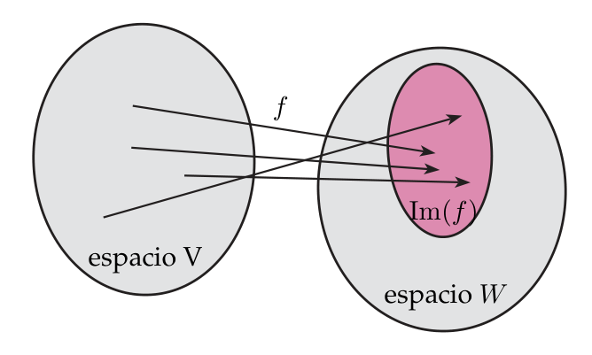
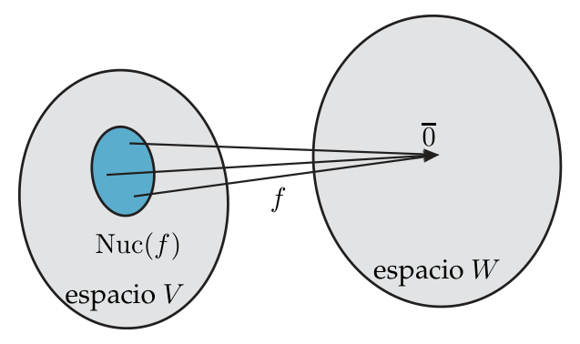

Imagen y núcleo
Toda aplicación lineal $f:V\to W$ lleva asociados dos subespacios: el núcleo (lo que $f$ aplasta en el cero, vive en $V$) y la imagen (lo que $f$ alcanza, vive en $W$). El teorema de las dimensiones los une: $\operatorname{Dim}\operatorname{Im}(f)+\operatorname{Dim}\operatorname{Nuc}(f)=\operatorname{Dim}V$.
0Antes de empezar U p.104-105
Una aplicación lineal es una «máquina» que transforma vectores de $V$ en vectores de $W$. Dos preguntas naturales: (1) ¿qué vectores de $V$ la máquina convierte en el vector cero? Es el núcleo. (2) ¿qué vectores de $W$ puede producir la máquina? Es la imagen. Lo bonito es que ambos conjuntos son subespacios, así que se les pueden calcular base, dimensión y ecuaciones con todo lo que ya sabes del tema 2, y que sus dimensiones están ligadas por una fórmula muy sencilla.
Qué necesitas saber ya
- Del tema 3.1: qué es una aplicación lineal ($f(v+\lambda u)=f(v)+\lambda f(u)$, Def. 3.1, U p.101) y sus propiedades: $f(0)=0$ y $f\big(\sum a_iv_i\big)=\sum a_if(v_i)$ (U p.103). Esta última es la que lo hace todo: conocer $f$ en una base es conocer $f$ en todo el espacio.
- Del tema 2: subespacio (2.1), sistema generador y ecuaciones paramétricas/cartesianas (2.2), base, dimensión y rango de un sistema de vectores (2.3: $\operatorname{Dim}\langle S\rangle=\operatorname{rang}(S)$, Teor. 2.5; «$n$ vectores libres en dimensión $n$ son base», Teor. 2.6).
- Del tema 1: resolver un sistema homogéneo por Gauss, rango de una matriz y Rouché-Frobenius (nº de parámetros libres $=$ incógnitas $-$ rango, U p.30).
Mapa del tema
| Apartado | Qué contiene | Dónde está en los libros |
|---|---|---|
| 1 La idea | Núcleo = «se aplasta en 0», imagen = «se alcanza»; dos ejemplos numéricos | U p.105 · L §4.2 p.204 |
| 2 Imagen | Def. 3.2, es subespacio de $W$; generada por las imágenes de una base; Ej. 3.8-3.11 | U p.105-109 |
| 3 Núcleo | Def. 3.3, es subespacio de $V$; sistema homogéneo; Ej. 3.12-3.14 | U p.109-111 |
| 4 Teorema de las dimensiones | Teor. 3.1 y Ej. 3.15; idea de la demostración | U p.111-112 · L §4.6 p.233 |
| 5 Inyectiva, sobreyectiva, isomorfismo | Vocabulario que no es de U pero cae en V/F | L §1.9 p.75-77 |
| 6 Método | Receta única: matriz → Gauss → rango, núcleo e imagen | propio |
| 7 Ejercicios del libro | E 3.16 y 3.20–3.29 + 3 ejemplos propios | E pp.93-104 |
| 8 Ejemplos de examen | 20 preguntas de convocatorias anteriores, resueltas | X |
Seis tareas que se repiten con distinto disfraz: (a) «halla una base del núcleo» (o sus ecuaciones, o su dimensión); (b) «halla la imagen: base, dimensión, ecuaciones cartesianas»; (c) «¿pertenece este vector al núcleo / a la imagen?» (o «halla $a,b$ para que pertenezca»); (d) usar el teorema de las dimensiones para sacar una dimensión que falta (rango de una matriz $3\times5$ sabiendo $\operatorname{Dim}\operatorname{Nuc}=3$, etc.); (e) lo mismo en polinomios o matrices (derivada, evaluación…); (f) «verdadero o falso» razonado. Todo se reduce a una matriz y Gauss (§6).
- E trata 3.2 y 3.3 juntas (E p.92: «los ejercicios de las secciones 3.2 y 3.3 se abordarán conjuntamente porque la matriz asociada es muy útil para analizar núcleo e imagen»). Por contenido, a este tema corresponden E 3.16 y 3.20–3.29; los ejercicios 3.15 y 3.17–3.19 solo piden la matriz asociada (tema 3.3) y 3.12 C / 3.13 D son de frontera con el tema 3.1.
- E 3.16: escribe «$y_1=\delta$» (debe ser $y_1=\alpha+\beta$) y dice «ecuaciones cartesianas de $f$» donde quiere decir «de $\operatorname{Im}(f)$». E 3.23: E renombra a propósito las coordenadas de la imagen como $x_i$ (nota al margen de E p.100) y escribe «$x_2=x_1+x_3$»; aquí se mantienen $y_j$ para no mezclar los dos espacios: $y_2=y_1+y_3$. E 3.24: la demostración oficial de A es correcta pero incompleta (se completa abajo). E 3.28 C y E 3.21 B omiten una comprobación (se completan).
- U no demuestra el Teorema 3.1 (solo lo enuncia y lo comprueba en el Ej. 3.15); aquí se da la idea de la demostración.
- U no define «inyectiva», «sobreyectiva» ni «isomorfismo» (no aparecen en todo el libro). Se explican en el §5 con la fuente de Lay, marcado como vocabulario ajeno a U, porque ayudan a razonar y aparecen en preguntas de verdadero/falso.
- Maxima no entra en el examen: los apartados de E que piden instrucciones de Maxima (3.20 D, 3.22 B) se mencionan solo por completitud.
Imagen $\operatorname{Im}(f)$ = «rango de la aplicación» (U, nota 1, p.105; Lay dice «rango de $T$»). Núcleo $\operatorname{Nuc}(f)$ = «kernel» o «subespacio nulo» (U, nota 2, p.105; Lay dice «núcleo» o «espacio nulo»). Cuidado: el «rango de una matriz» $A$ es la dimensión de su espacio columna, un número; el «rango de una aplicación» (en Lay) es un subespacio. En este resumen siempre «imagen» (subespacio) y «rango» (número).
U p.105 L §4.2 p.2041La idea: lo que se aplasta y lo que se alcanza propio
Piensa en un proyector de diapositivas (o en una linterna que proyecta sombras): lleva puntos del espacio 3D a la pared 2D. Núcleo = los puntos que acaban exactamente en el origen de la pared (todo lo que está sobre «el rayo» que pasa por el origen se aplasta en un único punto). Imagen = todos los puntos de la pared que la sombra puede alcanzar. Una máquina que aplasta mucho (núcleo grande) alcanza poco (imagen pequeña), y al revés: eso es exactamente lo que dice el teorema de las dimensiones (§4).
| Lenguaje natural | Lenguaje de conjuntos | Lenguaje algebraico |
|---|---|---|
| $w$ es un valor que $f$ puede dar | $w\in\operatorname{Im}(f)\subset W$ | existe $v\in V$ con $f(v)=w$ (sistema $f(x)=w$ compatible) |
| $v$ es un vector que $f$ manda al cero | $v\in\operatorname{Nuc}(f)\subset V$ | $f(v)=\bar0$ (sistema homogéneo $Ax=0$) |
U insiste en saber pasar de un lenguaje a otro (U p.105, «Orientaciones»).
Sea $f:\mathbb R^2\to\mathbb R^2$, $f(x,y)=(x+2y,\ 2x+4y)$. Fíjate en que la segunda coordenada es el doble de la primera:
- Qué alcanza (imagen). Sacando factor común, $$f(x,y)=(x+2y)\,(1,2).$$ Toda imagen es un múltiplo de $(1,2)$, y cualquier múltiplo $c\,(1,2)$ se alcanza (por ejemplo con $(x,y)=(c,0)$). Luego $\operatorname{Im}(f)=\langle(1,2)\rangle$: una recta de $\mathbb R^2$ (la de ecuación $y_2=2y_1$, escribiendo $(y_1,y_2)$ para el espacio de llegada). No se llega a todo el plano.
- Qué se aplasta (núcleo). $f(x,y)=(0,0)$ equivale a $x+2y=0$ (la segunda ecuación es la primera multiplicada por 2). Con $y=\lambda$ queda $x=-2\lambda$: $$\operatorname{Nuc}(f)=\{\lambda\,(-2,1)\}=\langle(-2,1)\rangle,$$ otra recta. Comprobación: $f(-2,1)=(-2+2,\,-4+4)=(0,0)$ ✓.
- Qué significa. Los vectores $(1,0)$ y $(1,0)+(-2,1)=(-1,1)$ difieren en un vector del núcleo, y tienen la misma imagen: $f(1,0)=(1,2)$ y $f(-1,1)=(-1+2,\,-2+4)=(1,2)$. En general, una recta paralela al núcleo entera se aplasta en un único punto.
- Dimensiones. $\operatorname{Dim}\operatorname{Im}(f)=1$, $\operatorname{Dim}\operatorname{Nuc}(f)=1$ y $1+1=2=\operatorname{Dim}\mathbb R^2$ (anticipo del Teorema 3.1).
Sea $f:\mathbb R^3\to\mathbb R^2$, $f(x,y,z)=(x,\,y)$: «olvida la altura $z$».
- Imagen. Dado cualquier $(a,b)\in\mathbb R^2$, el vector $(a,b,0)$ cumple $f(a,b,0)=(a,b)$. Se alcanza todo: $\operatorname{Im}(f)=\mathbb R^2$ (dimensión 2).
- Núcleo. $f(x,y,z)=(0,0)\iff x=0,\ y=0$, y $z$ queda libre. $\operatorname{Nuc}(f)=\{(0,0,z)\}=\langle(0,0,1)\rangle$: el eje vertical, dimensión 1. Es lo que se aplasta: todos los puntos de una misma vertical dan la misma sombra.
- Dimensiones. $2+1=3=\operatorname{Dim}\mathbb R^3$ ✓. Observa dónde vive cada uno: el núcleo es un subespacio de $\mathbb R^3$ (vectores de 3 coordenadas); la imagen, de $\mathbb R^2$ (2 coordenadas).
Confundir dónde vive cada subespacio. $\operatorname{Nuc}(f)\subset V$ (espacio inicial), $\operatorname{Im}(f)\subset W$ (espacio final). Si $f:\mathbb R^4\to P_2$, una base del núcleo está formada por vectores de $\mathbb R^4$ (4 coordenadas) y una base de la imagen por polinomios de $P_2$ (3 coordenadas). Usa letras distintas para las coordenadas de uno y otro ($x_i$ en el inicial, $y_j$ en el final).
2La imagen de una aplicación lineal U p.105-109
La imagen son todos los valores que $f$ puede tomar: los vectores de $W$ que tienen «algún original» en $V$. Como $f$ respeta combinaciones lineales, si ya sabes lo que hace con los vectores de una base, todos los demás valores son combinaciones de esos. Por eso la imagen es el subespacio generado por las imágenes de la base: es lo que se calcula siempre.
Sea $f:V\to W$ lineal. La imagen de $f$ es $$\operatorname{Im}(f)=\{\,w\in W\mid w=f(v)\ \text{para algún } v\in V\,\}.$$ La imagen de $f$ es un subespacio de $W$.
U p.106Basta ver (criterio de U p.66) que si $w_1,w_2\in\operatorname{Im}(f)$ y $\lambda\in\mathbb R$, entonces $w_1+\lambda w_2\in\operatorname{Im}(f)$. Como $w_1,w_2$ están en la imagen, existen $v_1,v_2\in V$ con $f(v_1)=w_1$ y $f(v_2)=w_2$. Por ser $f$ lineal, $$w_1+\lambda w_2=f(v_1)+\lambda f(v_2)=f(v_1+\lambda v_2),$$ y $v_1+\lambda v_2\in V$ porque $V$ es espacio vectorial. Luego $w_1+\lambda w_2$ tiene un original en $V$, es decir, está en $\operatorname{Im}(f)$. (Además $\bar0=f(\bar0)\in\operatorname{Im}(f)$, así que no es vacío.)
U p.106
Si $\{e_1,\dots,e_n\}$ es una base de $V$ (en $\mathbb R^n$, la canónica), entonces $$\operatorname{Im}(f)=\langle f(e_1),\dots,f(e_n)\rangle.$$ Por qué: todo $v\in V$ es $v=x_1e_1+\dots+x_ne_n$ y, por linealidad (U p.103), $f(v)=x_1f(e_1)+\dots+x_nf(e_n)$: toda imagen es combinación de las $f(e_j)$ y recíprocamente cualquier combinación de ellas es la imagen del $v$ correspondiente. Después se suprimen los dependientes (Teor. 2.1, U p.79) y la dimensión es el rango de esos vectores (Teor. 2.5, U p.88). Si la aplicación está dada por una matriz $A$, estos generadores son sus columnas.
U p.107-108Sea $M$ el espacio de las matrices $\begin{pmatrix}a_{11}&a_{12}\\a_{21}&0\end{pmatrix}$ y $f:M\to\mathbb R^4$ la aplicación del Ej. 3.1, que lleva $$f\begin{pmatrix}a_{11}&a_{12}\\a_{21}&0\end{pmatrix}=(a_{11}+a_{12},\ a_{12}-a_{11},\ a_{21},\ 0).$$
- Se ve a simple vista que la última coordenada es siempre 0: ningún vector de $\mathbb R^4$ con $x_4\neq0$ es imagen de una matriz de $M$.
- Pero eso por sí solo no prueba que se alcancen todos los demás. Hay que comprobar que, dado $(x_1,x_2,x_3,x_4)$ con $x_4=0$, el sistema $$\begin{cases}x_1=a_{11}+a_{12}\\x_2=a_{12}-a_{11}\\x_3=a_{21}\end{cases}$$ tiene solución en $a_{11},a_{12},a_{21}$: la matriz de coeficientes es $3\times3$ de determinante $\ne0$ (en las dos primeras ecuaciones, sumando y restando se despejan $a_{12}=\tfrac{x_1+x_2}2$, $a_{11}=\tfrac{x_1-x_2}2$).
- Por tanto $\operatorname{Im}(f)=\{(x_1,x_2,x_3,x_4)\in\mathbb R^4\mid x_4=0\}$: aquí la condición visible sí era suficiente (U lo avisa: no siempre lo es).
$f:\mathbb R^3\to\mathbb R^3$, $f(x_1,x_2,x_3)=(x_1+x_2,\ x_3,\ x_2)$.
- Separar por variables (la linealidad permite sacar los escalares $x_i$): $$f(x_1,x_2,x_3)=x_1\begin{pmatrix}1\\0\\0\end{pmatrix}+x_2\begin{pmatrix}1\\0\\1\end{pmatrix}+x_3\begin{pmatrix}0\\1\\0\end{pmatrix}.$$ Así $\{(1,0,0),(1,0,1),(0,1,0)\}$ es un sistema generador de $\operatorname{Im}(f)$.
- ¿Es libre? El determinante de los tres vectores es $$\begin{vmatrix}1&1&0\\0&0&1\\0&1&0\end{vmatrix}=1\cdot(0\cdot0-1\cdot1)=-1\neq0,$$ luego son independientes: forman una base y $\operatorname{Dim}\operatorname{Im}(f)=3$.
- Conclusión. $\operatorname{Im}(f)=\langle(1,0,0),(1,0,1),(0,1,0)\rangle=\mathbb R^3$: un subespacio de $\mathbb R^3$ de dimensión 3 es todo $\mathbb R^3$ (Teor. 2.6: sus 3 vectores de base son libres en $\mathbb R^3$ y, al ser $3=\operatorname{Dim}\mathbb R^3$, forman base de $\mathbb R^3$; luego el subespacio es $\mathbb R^3$).
$f:\mathbb R^3\to\mathbb R^2$ con $f(1,0,0)=(1,0)$, $f(0,1,0)=(1,1)$, $f(0,0,1)=(3,2)$.
- Fórmula de $f$. Por linealidad, $$f(x_1,x_2,x_3)=x_1\begin{pmatrix}1\\0\end{pmatrix}+x_2\begin{pmatrix}1\\1\end{pmatrix}+x_3\begin{pmatrix}3\\2\end{pmatrix}.$$
- Generadores. $\operatorname{Im}(f)=\langle(1,0),(1,1),(3,2)\rangle$. Son tres vectores, pero la dimensión no es 3 (estamos en $\mathbb R^2$): es el rango. $(1,0)$ y $(1,1)$ no son proporcionales, luego el rango es 2 (se ve en $\begin{vmatrix}1&1\\0&1\end{vmatrix}=1\neq0$). Y $(3,2)=(1,0)+2\,(1,1)$ sobra.
- Conclusión. Dos vectores independientes en $\mathbb R^2$ son base de $\mathbb R^2$: $\operatorname{Im}(f)=\mathbb R^2$.
$f:\wp_2\to\mathbb R^3$, $f(a+bx+cx^2)=(a,\ b+c,\ 0)$, con $\wp_2$ los polinomios de grado $\le2$.
- Los elementos de la imagen son los $(a,\,b+c,\,0)$ con $a,b,c\in\mathbb R$ cualesquiera. Separando, $$\begin{pmatrix}a\\b+c\\0\end{pmatrix}=a\begin{pmatrix}1\\0\\0\end{pmatrix}+(b+c)\begin{pmatrix}0\\1\\0\end{pmatrix}.$$
- Luego $\operatorname{Im}(f)=\langle(1,0,0),(0,1,0)\rangle$ (como $b+c$ toma cualquier valor, el segundo vector aparece con coeficiente libre) y $\operatorname{Dim}\operatorname{Im}(f)=2$.
- Ecuación cartesiana. La única coordenada que debe cumplir una condición es la tercera: $x_3=0$ (U usa $x_3$; con nuestra notación para el espacio de llegada, $y_3=0$): un plano de $\mathbb R^3$, $3-2=1$ ecuación.
Con los generadores de $\operatorname{Im}(f)$ ya depurados (una base), un vector $(y_1,\dots,y_m)\in W$ está en la imagen si y solo si añadirlo no sube el rango (Rouché: el sistema $f(x)=y$ es compatible). Se anulan los menores orlados (o el determinante, si hay un solo menor que orlar). Habrá $m-\operatorname{Dim}\operatorname{Im}(f)$ ecuaciones. Si la imagen es todo $W$, no hay ecuaciones cartesianas (E 3.16). Se ven aplicadas en E 3.23 y en varios ejemplos de examen.
propioCreer que la dimensión de la imagen es el número de generadores: es el rango. En el Ej. 3.10 hay 3 generadores y la dimensión es 2. Y otro, igual de frecuente: tomar las filas de la matriz como generadores de la imagen; son las columnas (cada columna es $f(e_j)$).
3El núcleo de una aplicación lineal U p.109-111
El núcleo es el conjunto de vectores que $f$ borra: los que manda al vector cero de $W$. Siempre contiene al $\bar0$ (porque $f(\bar0)=\bar0$). Si no contiene nada más, $f$ «no aplasta nada» y es lo más fiel posible; cuanto más grande es el núcleo, más información pierde $f$. Calcularlo es resolver un sistema homogéneo: «$f(x)=\bar0$».
Sea $f:V\to W$ lineal. El núcleo de $f$ es $$\operatorname{Nuc}(f)=\{\,v\in V\mid f(v)=\bar0\in W\,\}=f^{-1}(\bar0).$$ El núcleo de $f$ es un subespacio de $V$.
U p.109Si $v_1,v_2\in\operatorname{Nuc}(f)$ y $\lambda\in\mathbb R$, por ser $f$ lineal $$f(v_1+\lambda v_2)=f(v_1)+\lambda f(v_2)=\bar0+\lambda\,\bar0=\bar0,$$ luego $v_1+\lambda v_2\in\operatorname{Nuc}(f)$. Además $\bar0\in\operatorname{Nuc}(f)$ porque $f(\bar0)=\bar0$.
U p.109
- Escribe $f(x)=\bar0$ componente a componente: queda un sistema homogéneo en las coordenadas $x_i$ del espacio inicial (si $f$ viene dada por su matriz $A$: $AX=0$).
- Resuélvelo (Gauss). El número de parámetros libres es la dimensión: $n-\operatorname{rang}(A)$ (Rouché, U p.30).
- Escribe la solución general como $\lambda_1u_1+\dots+\lambda_ku_k$: los $u_i$ (uno por parámetro) son una base de $\operatorname{Nuc}(f)$. Las ecuaciones del núcleo son las del propio sistema (quitando las redundantes).
- Si el único vector que cumple todo es el $\bar0$, entonces $\operatorname{Nuc}(f)=\{\bar0\}$, con $\operatorname{Dim}=0$ (convenio de U p.112) y base vacía.
Para la $f:M\to\mathbb R^4$ del Ej. 3.1 (la del Ej. 3.8 de arriba). Una matriz de $M$ está en el núcleo si su imagen es $(0,0,0,0)$:
- Sistema: $$\begin{cases}a_{11}+a_{12}=0\\a_{12}-a_{11}=0\\a_{21}=0\end{cases}$$
- Sumando las dos primeras, $2a_{12}=0$, es decir $a_{12}=0$; llevado a la segunda, $a_{11}=0$; y $a_{21}=0$.
- Por tanto $\operatorname{Nuc}(f)=f^{-1}(0,0,0,0)=\left\{\begin{pmatrix}0&0\\0&0\end{pmatrix}\right\}$: solo la matriz nula.
Núcleo de la $f$ del Ej. 3.9, $f(x_1,x_2,x_3)=(x_1+x_2,\,x_3,\,x_2)$: $$\begin{cases}x_1+x_2=0\\x_3=0\\x_2=0\end{cases}\ \Longrightarrow\ x_2=0,\ x_3=0,\ x_1=0 .$$ Luego $\operatorname{Nuc}(f)=\{(0,0,0)\}$.
U p.110(a) La $f$ del Ej. 3.10 ($f(e_1)=(1,0)$, $f(e_2)=(1,1)$, $f(e_3)=(3,2)$).
- Por linealidad, $f(x_1,x_2,x_3)=x_1(1,0)+x_2(1,1)+x_3(3,2)=(x_1+x_2+3x_3,\ x_2+2x_3)$. Igualando a $(0,0)$: $$\begin{cases}x_1+x_2+3x_3=0\\x_2+2x_3=0\end{cases}$$ (dos ecuaciones independientes en 3 incógnitas: $3-2=1$ parámetro).
- Despejando de abajo arriba: $x_2=-2x_3$ y $x_1=-x_2-3x_3=2x_3-3x_3=-x_3$. Tomando como parámetro $x_3=-t$: $x_1=t,\ x_2=2t,\ x_3=-t$.
- $\operatorname{Nuc}(f)=\langle(1,2,-1)\rangle$ (U lo escribe $\big\langle(\tfrac12,1,-\tfrac12)\big\rangle$: mismo subespacio), de dimensión 1. Comprobación: $f(1,2,-1)=(1+2-3,\ 2-2)=(0,0)$ ✓.
(b) La $f$ del Ej. 3.11 ($f(a+bx+cx^2)=(a,\,b+c,\,0)$). Un polinomio está en el núcleo si $(a,\,b+c,\,0)=(0,0,0)$: $$\begin{cases}a=0\\b+c=0\end{cases}\ \Longrightarrow\ a=0,\ b=-c\ \Longrightarrow\ p=-c\,x+c\,x^2=c\,(x^2-x).$$ Luego $\operatorname{Nuc}(f)=\langle x-x^2\rangle$, de dimensión 1. (Con (b) y el Ej. 3.11: $2+1=3=\operatorname{Dim}\wp_2$.)
U p.111Cambia los cuatro números de la matriz $A$ (es la aplicación $f(x)=Ax$) y mueve el vector $x$. Con la matriz inicial (rango 1) verás la recta naranja (núcleo, a la izquierda: lo que se aplasta en el origen) y la recta azul (imagen, a la derecha: lo que se alcanza), y que la recta verde discontinua $x+\operatorname{Nuc}$ se aplasta entera en un punto. Prueba «Isomorfismo» (núcleo $=\{0\}$, imagen $=\mathbb R^2$) y «Aplicación nula» (núcleo $=\mathbb R^2$) y comprueba siempre que dim núcleo + dim imagen = 2.
«Inyectiva» y «sobreyectiva», que aparecen en los mensajes del componente, son vocabulario de Lay (§5), no de U.
PCon una matriz $3\times3$ el núcleo puede ser el origen, una recta, un plano o todo $\mathbb R^3$, y la imagen también; siempre se cumple $\operatorname{Dim}\operatorname{Nuc}f+\operatorname{Dim}\operatorname{Im}f=3$. Pulsa los casos preparados y mueve el vector $x$.
P- «El núcleo es el cero». $\{\bar0\}$ es el núcleo solo si nada más se aplasta. En el Ej. 3.14 hay una recta entera. La derivada en polinomios (E 3.26) aplasta todas las constantes.
- Dar como «base» el vector $\bar0$ o las ecuaciones: una base son vectores libres que generan; el $\bar0$ nunca está en una base (un sistema con el $\bar0$ es ligado). Si el núcleo es $\{\bar0\}$, la base es vacía y la dimensión 0.
- Ignorar una variable libre: si una variable no aparece en la fórmula de $f$ (como $z$ en $f(x,y,z)=(x,y)$), queda libre en el núcleo.
4El teorema de las dimensiones U p.111-112
Cada dimensión del espacio inicial $V$ o bien se pierde (se aplasta en el núcleo) o bien se conserva (aparece en la imagen). Es un presupuesto: si $V$ tiene 3 dimensiones y el núcleo se «come» 1, a la imagen le quedan 2. Es la fórmula que justifica todos los ejemplos de arriba: $1+1=2$ en el Ejemplo guía 1, $2+1=3$ en la proyección.
Si $f:V\to W$ es una aplicación lineal, entonces $$\operatorname{Dim}\operatorname{Im}(f)+\operatorname{Dim}\operatorname{Nuc}(f)=\operatorname{Dim}V.$$ $V$ es el espacio inicial (no el final $W$).
U p.111 L §4.6 p.233Sea $\operatorname{Dim}V=m$ y $\{u_1,\dots,u_k\}$ una base de $\operatorname{Nuc}(f)$ (dimensión $k$). Por la base incompleta (Teor. 2.7, U p.89) se completa hasta una base $\{u_1,\dots,u_k,v_1,\dots,v_r\}$ de $V$, con $k+r=m$. Se ve que $\{f(v_1),\dots,f(v_r)\}$ es una base de $\operatorname{Im}(f)$, y entonces $\operatorname{Dim}\operatorname{Im}(f)=r=m-k$:
- Generan la imagen. $\operatorname{Im}(f)$ está generada por las imágenes de la base de $V$; pero $f(u_i)=\bar0$ no aportan nada (Teor. 2.1), quedan $f(v_1),\dots,f(v_r)$.
- Son libres. Si $\beta_1f(v_1)+\dots+\beta_rf(v_r)=\bar0$, por linealidad $f(\beta_1v_1+\dots+\beta_rv_r)=\bar0$, es decir, $\beta_1v_1+\dots+\beta_rv_r\in\operatorname{Nuc}(f)=\langle u_1,\dots,u_k\rangle$. Entonces $\beta_1v_1+\dots+\beta_rv_r=\alpha_1u_1+\dots+\alpha_ku_k$ para ciertos $\alpha_i$; como $\{u_1,\dots,u_k,v_1,\dots,v_r\}$ es libre, todos los $\beta_j$ (y los $\alpha_i$) son $0$.
En la $f:M\to\mathbb R^4$ del Ej. 3.1 (Ejs. 3.8 y 3.12):
- $\operatorname{Dim}M=3$: las matrices $\begin{pmatrix}1&0\\0&0\end{pmatrix},\begin{pmatrix}0&1\\0&0\end{pmatrix},\begin{pmatrix}0&0\\1&0\end{pmatrix}$ generan $M$ y son libres.
- $\operatorname{Dim}\operatorname{Im}(f)=3$: $\operatorname{Im}(f)=\{(x_1,x_2,x_3,0)\}$ tiene por base $\{(1,0,0,0),(0,1,0,0),(0,0,1,0)\}$.
- $\operatorname{Dim}\operatorname{Nuc}(f)=0$: $\operatorname{Nuc}(f)=\{0\}$ y, por convenio, $\operatorname{Dim}\{0\}=0$.
- Comprobación: $\ 3+0=3$ ✓.
Sea $f:V\to W$ con $\operatorname{Dim}V=m$, $\operatorname{Dim}W=n$ y matriz asociada $A$ de orden $n\times m$ (una columna por cada vector de la base de $V$: $m$ columnas; se define con detalle en el tema 3.3, U p.116). E escribe $m\times n$ con $n=\operatorname{Dim}V$; lo que importa es: nº de columnas $=\operatorname{Dim}V$.
- $\operatorname{Dim}\operatorname{Im}(f)=\operatorname{rang}(A)$ (las columnas generan la imagen: Ej. 3.9 y Teor. 2.5, U p.88).
- $\operatorname{Dim}\operatorname{Nuc}(f)=m-\operatorname{rang}(A)$ (nº de columnas menos rango).
- Conociendo dos de las tres cantidades ($\operatorname{Dim}V$, $\operatorname{Dim}\operatorname{Im}$, $\operatorname{Dim}\operatorname{Nuc}$) sale la tercera; como $\operatorname{Dim}V$ suele conocerse, basta una de las otras dos. Además $\operatorname{Dim}\operatorname{Im}(f)\le\min(n,m)$.
Restar de la dimensión del espacio final. La suma $\operatorname{Dim}\operatorname{Im}+\operatorname{Dim}\operatorname{Nuc}$ es la del inicial $V$. Si $f:\mathbb R^3\to\mathbb R^2$ y $\operatorname{Dim}\operatorname{Nuc}=2$, entonces $\operatorname{Dim}\operatorname{Im}=3-2=1$, no $2-2$. Y si $A$ es $3\times5$ con núcleo de dimensión 3, el rango es $5-3=2$ (5 columnas), no $3-3$ (X Feb. 2020 (1.ª, B), ejercicio 3).
5Inyectiva, sobreyectiva, isomorfismo: el vocabulario de Lay L §1.9 p.75-77 · §4.4 p.220
El libro oficial (U) no usa nunca las palabras «inyectiva», «sobreyectiva» ni «isomorfismo» (ni en la teoría ni en E). Los exámenes tampoco las exigen como tales: preguntan por «núcleo de dimensión cero» o «imagen igual a todo el espacio». Se incluyen aquí, tomadas de Lay §1.9 (que dice «uno a uno» y «sobre»), porque dan nombre a las dos situaciones extremas del teorema de las dimensiones y ayudan a razonar las preguntas de verdadero/falso. Si el enunciado no las usa, tradúcelas: inyectiva = núcleo $\{0\}$, sobreyectiva = imagen igual al espacio final.
Sea $f:V\to W$ lineal.
- Inyectiva (Lay: «uno a uno»): cada $w\in W$ es imagen de a lo sumo un $v\in V$. Es decir, $f(v)=f(v')\Rightarrow v=v'$ (no hay dos vectores distintos con la misma imagen).
- Sobreyectiva (Lay: «sobre»): cada $w\in W$ es imagen de al menos un $v\in V$. Es decir, $\operatorname{Im}(f)=W$ (se alcanza todo).
- Isomorfismo (Lay §4.4, p.220): aplicación lineal inyectiva y sobreyectiva (biyectiva). Dos espacios entre los que hay un isomorfismo son «el mismo espacio con otros nombres».
$f$ es inyectiva $\iff$ $\operatorname{Nuc}(f)=\{\bar0\}$ $\iff$ $\operatorname{Dim}\operatorname{Nuc}(f)=0$.
Por qué. ($\Rightarrow$) Si $f$ es inyectiva, el único vector con imagen $\bar0$ es $\bar0$ (porque $f(\bar0)=\bar0$). ($\Leftarrow$) Si $f(v)=f(v')$, entonces $f(v-v')=f(v)-f(v')=\bar0$, luego $v-v'\in\operatorname{Nuc}(f)=\{\bar0\}$ y $v=v'$.
L §1.9 p.76Si $f:\mathbb R^m\to\mathbb R^n$ tiene matriz $A$ ($n\times m$): $f$ es sobreyectiva $\iff$ las columnas de $A$ generan $\mathbb R^n$ $\iff\operatorname{rang}(A)=n$; $f$ es inyectiva $\iff$ las columnas de $A$ son linealmente independientes $\iff\operatorname{rang}(A)=m$.
L §1.9 p.77- Inyectiva $\Rightarrow\operatorname{Dim}\operatorname{Im}(f)=\operatorname{Dim}V$, luego $\operatorname{Dim}V\le\operatorname{Dim}W$ (no se puede meter un espacio grande en uno pequeño sin aplastar).
- Sobreyectiva $\Rightarrow\operatorname{Dim}W=\operatorname{Dim}\operatorname{Im}(f)\le\operatorname{Dim}V$ (no se puede cubrir un espacio grande con uno pequeño).
- Isomorfismo $\Rightarrow\operatorname{Dim}V=\operatorname{Dim}W$.
- Si $\operatorname{Dim}V=\operatorname{Dim}W$ (en particular en un endomorfismo $V=W$): inyectiva $\iff$ sobreyectiva $\iff$ isomorfismo. Porque $\operatorname{Nuc}=\{0\}\iff\operatorname{Dim}\operatorname{Im}=\operatorname{Dim}V=\operatorname{Dim}W\iff\operatorname{Im}=W$ (Teor. 2.6). Con matriz: $\det A\neq0$.
Si $f(v_0)=w$, entonces todas las soluciones de $f(v)=w$ son $v=v_0+n$ con $n\in\operatorname{Nuc}(f)$. Por qué: $f(v)=f(v_0)\iff f(v-v_0)=\bar0\iff v-v_0\in\operatorname{Nuc}(f)$. Es lo mismo que en los sistemas lineales (tema 1.4): solución general $=$ particular $+$ solución del homogéneo. Si $\operatorname{Nuc}=\{0\}$ la solución, si existe, es única (inyectiva); si $\operatorname{Im}\neq W$, hay segundos miembros $w$ sin solución.
propio| Aplicación | $\operatorname{Nuc}$ | $\operatorname{Im}$ | ¿Iny.? | ¿Sobre? |
|---|---|---|---|---|
| Ej. U 3.9: $\mathbb R^3\to\mathbb R^3$, $(x_1+x_2,\,x_3,\,x_2)$ | $\{0\}$ | $\mathbb R^3$ | sí | sí → isomorfismo |
| Ej. U 3.10: $\mathbb R^3\to\mathbb R^2$ | recta | $\mathbb R^2$ | no | sí |
| E 3.23: $\mathbb R^2\to\mathbb R^3$, $(2x_1,3x_1+x_2,x_1+x_2)$ | $\{0\}$ | plano | sí | no |
| E 3.25: derivada $P_3\to P_3$ | constantes | $P_2$ | no | no |
| X Feb. 2022 (A): $\mathbb R^2\to D_{2\times2}$, $(x,y)\mapsto\operatorname{diag}(x,x-y)$ | $\{0\}$ | $D_{2\times2}$ | sí | sí → isomorfismo |
| Lay Ej. 5: $T(x_1,x_2)=(3x_1+x_2,\,5x_1+7x_2,\,x_1+3x_2)$ | $\{0\}$ | plano de $\mathbb R^3$ | sí | no (2 columnas no generan $\mathbb R^3$) |
Decir «$f:\mathbb R^2\to\mathbb R^3$ es sobreyectiva porque no tiene núcleo». Sin núcleo es inyectiva; pero $\operatorname{Dim}\operatorname{Im}\le2\lt 3$ y por tanto nunca puede ser sobreyectiva (E 3.12 C, en el tema 3.1). Y al revés: $\mathbb R^3\to\mathbb R^2$ nunca es inyectiva: el núcleo tiene dimensión $\ge1$.
6Método: una matriz, Gauss y todo sale propio
- Pasa $f$ a coordenadas. Escribe $A$ ($n\times m$, con $m=\operatorname{Dim}V$) con las columnas $f(e_1),\dots,f(e_m)$ (coordenadas de cada imagen en la base del espacio final; si es $P_n$ o matrices, usa la base canónica y escribe los coeficientes). Si $f$ viene en fórmulas $y_j=\dots$, los coeficientes de cada $x_i$ forman la columna $i$.
- Escalona $A$ por filas (Gauss). Cuenta los pivotes: $r=\operatorname{rang}(A)$.
- Núcleo. Resuelve $AX=0$ con la escalonada: las incógnitas sin pivote son los parámetros; un vector de la base por parámetro; $\operatorname{Dim}\operatorname{Nuc}=n-r$.
- Imagen. Las columnas de $A$ con pivote (¡columnas de la $A$ original, no de la escalonada!) son una base de $\operatorname{Im}(f)$; $\operatorname{Dim}\operatorname{Im}=r$. Para las cartesianas: $(y_1,\dots,y_m)$ no sube el rango; hay $m-r$ ecuaciones.
- Comprueba: $r+(n-r)=n$ ✓; el vector del núcleo cumple $A\cdot v=0$; las columnas de la base están en la imagen.
Observa cómo se escalona la matriz de E 3.20 (aplicación $\mathbb R^4\to P_2$, que se resuelve más abajo): el nº de filas no nulas es el rango (3), y por tanto el núcleo tiene $4-3=1$ parámetro libre. Aviso: la animación llega a la escalonada reducida, con fracciones; de ahí se lee el núcleo: $x_4=t$ y $(x_1,x_2,x_3)=-\tfrac t2\,(3,1,1)$, es decir $\langle(3,1,1,-2)\rangle$. Puedes cambiar los datos y comprobar el teorema de las dimensiones con otras matrices.
P7Ejercicios del libro, resueltos E p.93-104
Los ejercicios de E para esta sección son 3.16 y 3.20–3.29 (E trata 3.2 y 3.3 conjuntamente, p.92; los que solo piden la matriz asociada, 3.15 y 3.17–3.19, se desarrollan en el tema 3.3; los de frontera 3.12 C y 3.13 D están en el tema 3.1). Orden sugerido, de fácil a difícil: 3.16 → 3.22 → 3.23 → 3.20 → 3.21 → 3.25 → 3.26 → 3.27 → 3.29 → 3.24 → 3.28. Aquí se presentan en el orden del libro; las soluciones están plegadas.
Ejercicio 3.16 — ecuaciones paramétricas y cartesianas de la imagen, $\mathbb R^3\to\mathbb R^2$ E p.93
Si $f$ es la aplicación del Ejercicio 3.15, se piden ecuaciones paramétricas y ecuaciones cartesianas de $\operatorname{Im}(f)$. (Ej. 3.15, E p.93: $f:\mathbb R^3\to\mathbb R^2$ lineal con $f(1,0,0)=(1,1)$, $f(0,1,0)=(1,1)$, $f(0,0,1)=(1,0)$.)
Idea. La imagen está generada por las imágenes de los vectores de una base del espacio inicial (Ej. 3.10, U p.108). Basta escribir $f(x_1,x_2,x_3)$ como combinación lineal de esas imágenes.
- Imagen de un vector cualquiera. Por linealidad (propiedad 3, U p.103): $$\begin{aligned}f(x_1,x_2,x_3)&=x_1f(1,0,0)+x_2f(0,1,0)+x_3f(0,0,1)\\&=x_1\begin{pmatrix}1\\1\end{pmatrix}+x_2\begin{pmatrix}1\\1\end{pmatrix}+x_3\begin{pmatrix}1\\0\end{pmatrix}\\&=\begin{pmatrix}x_1+x_2+x_3\\x_1+x_2\end{pmatrix}.\end{aligned}$$ (Son las ecuaciones de $f$; la matriz es $A=\begin{pmatrix}1&1&1\\1&1&0\end{pmatrix}$.)
- Sistema generador (Def. 3.2, U p.106): $\operatorname{Im}(f)=\langle(1,1),(1,1),(1,0)\rangle$. El vector repetido sobra (Teor. 2.1, U p.79): $\operatorname{Im}(f)=\langle(1,1),(1,0)\rangle$, y agrupando, $f(x)=(x_1+x_2)(1,1)+x_3(1,0)$.
- Ecuaciones paramétricas. Llamando $\alpha=x_1+x_2$ y $\beta=x_3$ (que recorren todo $\mathbb R$ al variar $x$): $$\begin{cases}y_1=\alpha+\beta\\y_2=\alpha\end{cases}\qquad\alpha,\beta\in\mathbb R.$$
- Dimensión. $\begin{vmatrix}1&1\\1&0\end{vmatrix}=1\cdot0-1\cdot1=-1\neq0$: rango 2 (Teor. 2.5, U p.88). Dos vectores libres en $\mathbb R^2$ son base (Teor. 2.6): $\operatorname{Im}(f)=\mathbb R^2$. Comprobación directa: dado $(y_1,y_2)$ basta tomar $\alpha=y_2$ y $\beta=y_1-y_2$.
- Ecuaciones cartesianas. Eliminando los parámetros no queda ninguna relación entre $y_1$ e $y_2$: $\operatorname{Im}(f)$ no tiene ecuaciones cartesianas (es todo $\mathbb R^2$; $m-\operatorname{Dim}=2-2=0$ ecuaciones).
- Comprobación con el Teorema 3.1 (no pedida): $x_1+x_2+x_3=0$ y $x_1+x_2=0$ dan $x_3=0$, $x_2=-x_1$; $\operatorname{Nuc}(f)=\langle(1,-1,0)\rangle$, dimensión 1, y $2+1=3=\operatorname{Dim}\mathbb R^3$ ✓.
Resultado: $\operatorname{Im}(f)=\mathbb R^2$ (paramétricas $y_1=\alpha+\beta,\ y_2=\alpha$; sin cartesianas). (Verificado con sympy.)
Nota sobre el libro. E escribe «$y_1=\delta$» en las paramétricas (errata: debe ser $y_1=\alpha+\beta$), dice «ecuaciones cartesianas de $f$» donde quiere decir «de $\operatorname{Im}(f)$», y concluye $\operatorname{Im}(f)=\mathbb R^2$ sin justificar que $(1,1)$ y $(1,0)$ son independientes (aquí, el determinante).
Error típico: pensar que, como hay 3 generadores, la imagen tiene dimensión 3 (imposible en $\mathbb R^2$): la dimensión es el rango.
Teoría: Def. 3.2 y Ej. 3.10, U p.106-108 · Teor. 2.5-2.6, U p.88
Ejercicio 3.20 — matriz, núcleo y dimensión de la imagen, $\mathbb R^4\to P_2$ E p.97
Si las imágenes por una aplicación lineal $f$ de los vectores de la base canónica de $\mathbb R^4$ en $P_2$ son $(1,0,-1)$, $(2,-4,1)$, $(-1,0,-2)$, $(2,-2,-2)$, se pide: A) Matriz y ecuaciones de $f$ en las bases canónicas. B) Ecuaciones y una base de $\operatorname{Nuc}(f)$. C) Dimensión de $\operatorname{Im}(f)$. D) Instrucciones de MAXIMA que permiten encontrar una base y la dimensión del núcleo de $f$.
Interpretación. $P_2$ (en U, $\wp_2$) son los polinomios de grado $\le2$, con base canónica $\{1,x,x^2\}$. Las ternas son coordenadas en esa base: $f(e_1)=1-x^2$, $f(e_2)=2-4x+x^2$, $f(e_3)=-1-2x^2$, $f(e_4)=2-2x-2x^2$.
- A) Matriz (columna $j$ = coordenadas de $f(e_j)$, Def. 3.4, U p.116) y ecuaciones $Y=AX$ (U p.117): $$A=\begin{pmatrix}1&2&-1&2\\0&-4&0&-2\\-1&1&-2&-2\end{pmatrix},$$ y las ecuaciones de $f$ son $$\begin{cases}y_1=x_1+2x_2-x_3+2x_4\\y_2=-4x_2-2x_4\\y_3=-x_1+x_2-2x_3-2x_4\end{cases}$$ donde $(y_1,y_2,y_3)$ son las coordenadas de $f(x)=y_1+y_2x+y_3x^2$.
- B) Ecuaciones del núcleo. $x\in\operatorname{Nuc}(f)\iff f(x)$ es el polinomio nulo $\iff y_1=y_2=y_3=0$ (Def. 3.3, U p.109): el sistema $AX=0$.
- Gauss. Con $F_3\to F_3+F_1$ (para anular el $-1$ de la primera columna): $$\begin{pmatrix}1&2&-1&2\\0&-4&0&-2\\0&3&-3&0\end{pmatrix}$$ que equivale al sistema $$\begin{cases}x_1+2x_2-x_3+2x_4=0\\-4x_2-2x_4=0\ \Rightarrow\ x_4=-2x_2\\3x_2-3x_3=0\ \Rightarrow\ x_3=x_2\end{cases}$$ Hay tres pivotes (rango 3) y cuatro incógnitas: un parámetro libre, $x_2=\alpha$.
- Resolver hacia arriba. $x_3=\alpha$, $x_4=-2\alpha$ y, de la 1.ª ecuación, $$\begin{aligned}x_1&=-2x_2+x_3-2x_4\\&=-2\alpha+\alpha+4\alpha=3\alpha.\end{aligned}$$ En forma vectorial: $(x_1,x_2,x_3,x_4)=\alpha\,(3,1,1,-2)$. Base de $\operatorname{Nuc}(f)$: $\{(3,1,1,-2)\}$, $\operatorname{Dim}\operatorname{Nuc}(f)=1$. Ecuaciones cartesianas reducidas: $x_1=3x_2,\ x_3=x_2,\ x_4=-2x_2$. Comprobación: $A\,(3,1,1,-2)^T=(3+2-1-4,\ -4+4,\ -3+1-2+4)=(0,0,0)$ ✓.
- C) Dimensión de la imagen (Teor. 3.1, U p.111): $\operatorname{Dim}\operatorname{Im}(f)=\operatorname{Dim}\mathbb R^4-\operatorname{Dim}\operatorname{Nuc}(f)=4-1=3$ (coincide con el rango de $A$). Consecuencia que E no dice: una base de $\operatorname{Im}(f)$ son 3 vectores libres de $P_2$, que tiene dimensión 3, luego (Teor. 2.6) $\operatorname{Im}(f)=P_2$.
- D) Maxima (fuera de examen):
nullspace(A)(base del núcleo) ynullity(A)(dimensión). En sympy:A.nullspace(),len(A.nullspace()).
Resultado: $\operatorname{Nuc}(f)=\langle(3,1,1,-2)\rangle$, $\operatorname{Dim}\operatorname{Im}(f)=3$ e $\operatorname{Im}(f)=P_2$. (Verificado con sympy: rango 3; el núcleo que da sympy, $(-\tfrac32,-\tfrac12,-\tfrac12,1)$, es $-\tfrac12(3,1,1,-2)$, el mismo subespacio.)
Nota sobre el libro. Coincide. No concluye $\operatorname{Im}(f)=P_2$.
Error típico: olvidar que la base del núcleo está en el espacio inicial ($\mathbb R^4$, 4 coordenadas), mientras que la imagen está en $P_2$ (3 coordenadas); o dar las 4 columnas como base de la imagen (son ligadas: el rango es 3).
Teoría: Def. 3.3 y Teor. 3.1, U p.109-111 · Def. 3.4, U p.116
Ejercicio 3.21 — matriz, base de la imagen y núcleo, $\mathbb R^3\to\mathcal M_{2\times2}$ E p.98
Si $f:\mathbb R^3\to\mathcal M_{2\times2}$ es la aplicación lineal tal que $$f(1,0,0)=\begin{pmatrix}2&-1\\3&0\end{pmatrix};\quad f(0,1,0)=\begin{pmatrix}1&0\\4&2\end{pmatrix};\quad f(0,0,1)=\begin{pmatrix}5&1\\0&1\end{pmatrix},$$ se pide calcular: A) La matriz asociada a $f$. B) Base de $\operatorname{Im}(f)$. C) Núcleo de $f$.
- Coordenadas en $\mathcal M_{2\times2}$. Con la base canónica $\{E_{11},E_{12},E_{21},E_{22}\}$, la matriz $\begin{pmatrix}a&b\\c&d\end{pmatrix}$ tiene coordenadas $(a,b,c,d)$ (Def. 2.10, U p.85).
- A) Matriz asociada ($4\times3$: 3 columnas porque $\operatorname{Dim}\mathbb R^3=3$, 4 filas porque $\operatorname{Dim}\mathcal M_{2\times2}=4$; Def. 3.4, U p.116): $$A=\begin{pmatrix}2&1&5\\-1&0&1\\3&4&0\\0&2&1\end{pmatrix}.$$
- Imagen de un vector cualquiera. $f(x_1,x_2,x_3)=x_1f(e_1)+x_2f(e_2)+x_3f(e_3)=\begin{pmatrix}2x_1+x_2+5x_3&-x_1+x_3\\3x_1+4x_2&2x_2+x_3\end{pmatrix}$. Por tanto $\operatorname{Im}(f)=\langle f(e_1),f(e_2),f(e_3)\rangle$ (Def. 3.2, U p.106).
- B) ¿Son independientes los tres generadores? (Paso que E omite.) Su rango es el de $A$ (Teor. 2.5, U p.88). El menor de las tres primeras filas vale $$\begin{vmatrix}2&1&5\\-1&0&1\\3&4&0\end{vmatrix}=2(0-4)-1(0-3)+5(-4-0)=-8+3-20=-25\neq0,$$ así que $\operatorname{rang}A=3$: los tres generadores son libres. Base de $\operatorname{Im}(f)$: las tres matrices $f(e_1),f(e_2),f(e_3)$, $\operatorname{Dim}\operatorname{Im}(f)=3$. ($\operatorname{Im}(f)\neq\mathcal M_{2\times2}$: le falta una dimensión.)
- C) Núcleo. $f(x)=\begin{pmatrix}0&0\\0&0\end{pmatrix}$ equivale a $$2x_1+x_2+5x_3=0,\quad-x_1+x_3=0,\quad3x_1+4x_2=0,\quad2x_2+x_3=0.$$ De la 2.ª, $x_3=x_1$; de la 3.ª, $x_2=-\tfrac34x_1$; en la 4.ª: $-\tfrac32x_1+x_1=-\tfrac12x_1=0\Rightarrow x_1=0$, y entonces $x_2=x_3=0$. $\operatorname{Nuc}(f)=\{(0,0,0)\}$. (Alternativa: sistema homogéneo con $\operatorname{rang}A=3=$ nº de incógnitas $\Rightarrow$ solo la solución nula, U p.30.)
- Coherencia (Teor. 3.1): $3+0=3=\operatorname{Dim}\mathbb R^3$ ✓.
Resultado: $A$ como arriba; $\operatorname{Dim}\operatorname{Im}(f)=3$ con base $\{f(e_1),f(e_2),f(e_3)\}$; $\operatorname{Nuc}(f)=\{0\}$. (Verificado con sympy: rango 3, núcleo vacío, menor $=-25$.)
Nota sobre el libro. Coincide, pero E afirma $\operatorname{Dim}\operatorname{Im}(f)=3$ en B sin comprobar que los tres generadores son independientes (solo se deduce después, en C).
Error típico: dar como base de la imagen los generadores sin comprobar que son libres; o mezclar el orden de las coordenadas $(a,b,c,d)$ (por filas) con $(a,c,b,d)$ (por columnas): vale cualquiera si se usa siempre el mismo.
Teoría: Defs. 3.2-3.4, U p.106-116 · Teor. 2.5, U p.88 · Rouché, U p.30
Ejercicio 3.22 — verdadero/falso sobre las dimensiones de $\operatorname{Im}$ y $\operatorname{Nuc}$ E p.99
Si $f:\mathbb R^3\to\mathbb R^2$ está definida por $f(x_1,x_2,x_3)=(x_1+x_2,\,0)$, se pide justificar si es cierta alguna de las afirmaciones: A) $\operatorname{Dim}\operatorname{Im}(f)+\operatorname{Dim}\operatorname{Nuc}(f)=\operatorname{Dim}\mathbb R^2$. B) Si $A$ es la matriz asociada, al ejecutar en MAXIMA columnspace(A) y nullity(A) se obtienen $\operatorname{Dim}\operatorname{Im}(f)$ y $\operatorname{Dim}\operatorname{Nuc}(f)$. C) Las dimensiones de $\operatorname{Nuc}(f)$ e $\operatorname{Im}(f)$ coinciden.
- Matriz asociada (columnas $=f(e_j)$, Def. 3.4, U p.116): $f(1,0,0)=(1,0)$, $f(0,1,0)=(1,0)$, $f(0,0,1)=(0,0)$, luego $A=\begin{pmatrix}1&1&0\\0&0&0\end{pmatrix}$.
- Imagen. $\operatorname{Im}(f)=\langle(1,0),(1,0),(0,0)\rangle=\langle(1,0)\rangle$: $\operatorname{Dim}\operatorname{Im}(f)=1$, ecuación cartesiana $y_2=0$ (el eje $y_1$).
- Núcleo. $f(x)=(0,0)\iff x_1+x_2=0$ (la 2.ª componente es siempre 0): una sola ecuación en $\mathbb R^3$. Paramétricas $x_1=\alpha,\ x_2=-\alpha,\ x_3=\beta$, es decir $\operatorname{Nuc}(f)=\langle(1,-1,0),(0,0,1)\rangle$; los dos generadores no son proporcionales, luego $\operatorname{Dim}\operatorname{Nuc}(f)=2$.
- A) Falsa. El Teor. 3.1 (U p.111) relaciona las dimensiones con el espacio inicial: $1+2=3=\operatorname{Dim}\mathbb R^3\neq\operatorname{Dim}\mathbb R^2=2$.
- B) Falsa (cuestión de Maxima, fuera de examen).
columnspace(A)devuelve una base del espacio columna, no su dimensión (esta se obtiene conrank(A));nullity(A)sí da $\operatorname{Dim}\operatorname{Nuc}$. - C) Falsa: $\operatorname{Dim}\operatorname{Nuc}(f)=2\neq1=\operatorname{Dim}\operatorname{Im}(f)$.
Resultado: A, B y C son falsas. (Verificado con sympy: rango 1, núcleo $\langle(-1,1,0),(0,0,1)\rangle$.)
Error típico: aplicar el Teorema 3.1 con la dimensión del espacio de llegada (opción A).
Teoría: Teor. 3.1, U p.111 · Def. 3.4, U p.116
Ejercicio 3.23 — ecuaciones y bases de $\operatorname{Im}$ y $\operatorname{Nuc}$, $\mathbb R^2\to\mathbb R^3$ E p.100
Si $f$ es la aplicación lineal del Ejercicio 3.2 ($f:\mathbb R^2\to\mathbb R^3$, $f(x_1,x_2)=(2x_1,\ 3x_1+x_2,\ x_1+x_2)$), se pide: A) Ecuaciones y base del subespacio $\operatorname{Im}(f)$. B) Ecuaciones y base del subespacio $\operatorname{Nuc}(f)$. C) Relación entre las dimensiones de $\operatorname{Im}(f)$ y $\operatorname{Nuc}(f)$.
- Generadores de la imagen. Separando los coeficientes de $x_1$ y $x_2$: $$f(x_1,x_2)=x_1\begin{pmatrix}2\\3\\1\end{pmatrix}+x_2\begin{pmatrix}0\\1\\1\end{pmatrix}.$$ Así $\operatorname{Im}(f)=\langle(2,3,1),(0,1,1)\rangle$ (Def. 3.2, U p.106; igual que el Ej. 3.9, U p.107).
- Base y dimensión. Los dos vectores son independientes: el menor $\begin{vmatrix}2&0\\3&1\end{vmatrix}=2\neq0$, luego el rango es 2 (Teor. 2.5, U p.88). Base: $\{(2,3,1),(0,1,1)\}$, $\operatorname{Dim}\operatorname{Im}(f)=2$.
- Ecuaciones paramétricas: $y_1=2\alpha,\ y_2=3\alpha+\beta,\ y_3=\alpha+\beta$, con $\alpha,\beta\in\mathbb R$.
- Ecuación cartesiana (por qué un determinante). $(y_1,y_2,y_3)\in\operatorname{Im}(f)\iff$ existe $(x_1,x_2)$ con $f(x_1,x_2)=(y_1,y_2,y_3)\iff$ el sistema $$\left(\begin{array}{cc|c}2&0&y_1\\3&1&y_2\\1&1&y_3\end{array}\right)$$ es compatible, es decir (Rouché-Frobenius, U p.30) la matriz de coeficientes y la ampliada tienen el mismo rango. La de coeficientes tiene rango 2, así que la ampliada ($3\times3$) debe tener rango 2: determinante nulo. Desarrollando por la 1.ª fila, $$\begin{aligned}\begin{vmatrix}2&0&y_1\\3&1&y_2\\1&1&y_3\end{vmatrix}&=2\,(y_3-y_2)-0+y_1\,(3-1)\\&=2y_1-2y_2+2y_3\\&=0\iff\boxed{y_2=y_1+y_3}.\end{aligned}$$ Comprobación: $(2,3,1)$: $3=2+1$ ✓; $(0,1,1)$: $1=0+1$ ✓. Hay $3-2=1$ ecuación, como corresponde a un plano por el origen en $\mathbb R^3$.
- Núcleo. Por la Def. 3.3 (U p.109), $f(x_1,x_2)=(0,0,0)$: $$2x_1=0,\qquad3x_1+x_2=0,\qquad x_1+x_2=0.$$ De la 1.ª, $x_1=0$; en la 2.ª, $x_2=0$ (la 3.ª se cumple). $\operatorname{Nuc}(f)=\{(0,0)\}$, ecuaciones $x_1=0,\ x_2=0$, y no tiene base (o: base vacía) con $\operatorname{Dim}=0$, por convenio (U p.112): el vector $\bar0$ no puede estar en una base.
- C) Relación. Teor. 3.1 (U p.111): $\operatorname{Dim}\operatorname{Im}(f)+\operatorname{Dim}\operatorname{Nuc}(f)=\operatorname{Dim}\mathbb R^2$: $2+0=2$ ✓.
Resultado: $\operatorname{Im}(f)=\{y_2=y_1+y_3\}$, base $\{(2,3,1),(0,1,1)\}$; $\operatorname{Nuc}(f)=\{0\}$; $2+0=2$. (Verificado con sympy: rango 2, núcleo vacío, determinante $=2y_1-2y_2+2y_3$.)
Nota sobre el libro. E renombra a propósito las coordenadas de la imagen como $x_i$ (nota al margen de E p.100) y escribe «$x_2=x_1+x_3$»; aquí se mantienen las $y_j$ para no mezclar las coordenadas del espacio inicial y del final. Lo demás coincide.
Error típico: escribir las ecuaciones de $f$ ($y_1=2x_1,\dots$) como si fueran las cartesianas de la imagen: estas no deben contener las $x_i$, solo relaciones entre las $y_j$. Otro: decir que la base del núcleo es $\{(0,0)\}$.
Teoría: Defs. 3.2-3.3 y Teor. 3.1, U p.106-111 · Rouché, U p.30
Ejercicio 3.24 — el núcleo de $\lambda f$ (V/F) E p.101
Si $f$ es una aplicación lineal entre los espacios vectoriales $V$ y $W$, y $\lambda$ cualquier número real no nulo, se pide elegir las correctas: A) $\operatorname{Nuc}(\lambda f)=\lambda\operatorname{Nuc}(f)$. B) $\operatorname{Dim}\operatorname{Nuc}(\lambda f)\gt \operatorname{Dim}\operatorname{Nuc}(f)$ cuando $\lambda\gt 1$. C) $\operatorname{Dim}\operatorname{Nuc}(\lambda f)\lt \operatorname{Dim}\operatorname{Nuc}(f)$ cuando $\lambda\lt 1$.
Notación. $(\lambda f)(v)=\lambda f(v)$ (Def. 3.8, U p.120); $\lambda\operatorname{Nuc}(f)=\{\lambda v: v\in\operatorname{Nuc}(f)\}$.
- $\operatorname{Nuc}(\lambda f)=\operatorname{Nuc}(f)$. Para $v\in V$: $$v\in\operatorname{Nuc}(\lambda f)\iff(\lambda f)(v)=\bar0\iff\lambda f(v)=\bar0\iff f(v)=\bar0\iff v\in\operatorname{Nuc}(f).$$ El paso central usa $\lambda\neq0$: multiplicando por $\tfrac1\lambda$, $\lambda f(v)=\bar0\Rightarrow f(v)=\bar0$ (el recíproco es obvio).
- $\lambda\operatorname{Nuc}(f)=\operatorname{Nuc}(f)$. «$\subseteq$»: $\operatorname{Nuc}(f)$ es subespacio (Def. 3.3, U p.109), luego es cerrado para el producto por escalares: $v\in\operatorname{Nuc}(f)\Rightarrow\lambda v\in\operatorname{Nuc}(f)$. «$\supseteq$»: si $u\in\operatorname{Nuc}(f)$, entonces $u=\lambda\cdot\big(\tfrac1\lambda u\big)$ con $\tfrac1\lambda u\in\operatorname{Nuc}(f)$.
- A) Cierta, por 1 y 2: $\operatorname{Nuc}(\lambda f)=\operatorname{Nuc}(f)=\lambda\operatorname{Nuc}(f)$.
- B) y C) Falsas, porque por el paso 1, $\operatorname{Dim}\operatorname{Nuc}(\lambda f)=\operatorname{Dim}\operatorname{Nuc}(f)$ para todo $\lambda\neq0$: nunca es mayor ni menor. Contraejemplo concreto: $f(x_1,x_2)=(x_1,0)$ y $\lambda=2$: $\operatorname{Nuc}(f)=\operatorname{Nuc}(2f)=\langle(0,1)\rangle$, ambos de dimensión 1.
Resultado: solo A es correcta. (Verificado: $\operatorname{Nuc}(2f)=\operatorname{Nuc}(f)$ en el contraejemplo.)
Nota sobre el libro. La conclusión (A cierta, B y C falsas) coincide y la demostración oficial es correcta pero incompleta: encadena «$f(v)=0\Leftrightarrow\lambda f(v)=f(\lambda v)=0\Leftrightarrow\lambda v\in\operatorname{Nuc}(\lambda f)$» sin justificar el último paso, que es cierto solo porque $\lambda\neq0$ (pues $(\lambda f)(\lambda v)=\lambda^2f(v)=0\iff f(v)=0$). Tampoco explica por qué A implica que las dimensiones coinciden: $v\mapsto\lambda v$ es lineal y biyectiva, así que lleva una base de $\operatorname{Nuc}(f)$ a una base de $\lambda\operatorname{Nuc}(f)$; de ahí que B y C sean falsas (aquí, mejor, por $\operatorname{Nuc}(\lambda f)=\operatorname{Nuc}(f)$).
Error típico: creer que multiplicar la aplicación por un número «agranda» o «encoge» el núcleo: el núcleo depende de dónde se anula $f$, y $\lambda f$ se anula exactamente en los mismos vectores.
Teoría: Def. 3.3, U p.109 · Def. 3.8, U p.120
Ejercicio 3.25 — matriz de la derivada en $P_3$ e imagen E p.101
Si $P_3(x)$ es el espacio vectorial de los polinomios reales de una variable y grado $\le3$, y $f$ es el endomorfismo de $P_3(x)$ que asigna a cada polinomio su primera derivada, se pide: matriz de la aplicación, una base y dimensión de $\operatorname{Im}(f)$.
- ¿Es lineal? (E lo da por supuesto.) $(p+\lambda q)'=p'+\lambda q'$: cumple la Def. 3.1 (U p.101). Además la derivada de un polinomio de grado $\le3$ tiene grado $\le2$, luego está en $P_3(x)$: es un endomorfismo.
- Imágenes de la base canónica $\{1,x,x^2,x^3\}$: $f(1)=0$, $f(x)=1$, $f(x^2)=2x$, $f(x^3)=3x^2$. En coordenadas: $(0,0,0,0)$, $(1,0,0,0)$, $(0,2,0,0)$, $(0,0,3,0)$.
- Matriz (esas coordenadas en columnas, Def. 3.4, U p.116): $$D=\begin{pmatrix}0&1&0&0\\0&0&2&0\\0&0&0&3\\0&0&0&0\end{pmatrix}.$$ Comprobación: $p=a+bx+cx^2+dx^3\mapsto D(a,b,c,d)^T=(b,2c,3d,0)$, que son las coordenadas de $b+2cx+3dx^2=p'$ ✓.
- Imagen. $\operatorname{Im}(f)=\langle f(1),f(x),f(x^2),f(x^3)\rangle=\langle0,\,1,\,2x,\,3x^2\rangle=\langle1,x,x^2\rangle$ (se suprime el $0$ y se dividen los generadores por $2$ y $3$, lo que no cambia el subespacio generado: Teor. 2.1-2.2, U p.79).
- Base y dimensión. $\{1,x,x^2\}$ es libre (parte de la base canónica: $\alpha+\beta x+\gamma x^2=0$ para todo $x$ implica $\alpha=\beta=\gamma=0$). Base: $\{1,x,x^2\}$; $\operatorname{Dim}\operatorname{Im}(f)=3$; $\operatorname{Im}(f)=P_2(x)$. (Sentido: todo polinomio de grado $\le2$ es la derivada de alguno de grado $\le3$, su primitiva.)
Resultado: matriz $D$ como arriba; $\operatorname{Im}(f)=P_2(x)$, base $\{1,x,x^2\}$, dimensión 3. (Verificado con sympy: rango 3.)
Error típico: poner las coordenadas en filas (sale la traspuesta, que es la matriz de otra aplicación); o decir que $\operatorname{Im}(f)=P_3$ porque «es un endomorfismo».
Teoría: Def. 3.1, U p.101 · Def. 3.2 y Ej. 3.11, U p.106-109
Ejercicio 3.26 — núcleo de la derivada en $P_3$ E p.102
Si $f$ es el endomorfismo de $P_3(x)$ del Ejercicio 3.25, se pide: A) Subespacio $\operatorname{Nuc}(f)$. B) Una base de $\operatorname{Nuc}(f)$. C) Dimensión de $\operatorname{Nuc}(f)$.
- A) Por la Def. 3.3 (U p.109): $p=a+bx+cx^2+dx^3\in\operatorname{Nuc}(f)\iff p'=b+2cx+3dx^2$ es el polinomio nulo $\iff b=0,\ 2c=0,\ 3d=0$ (un polinomio es nulo si y solo si todos sus coeficientes son 0) $\iff p=a$. $\operatorname{Nuc}(f)=\{a: a\in\mathbb R\}=P_0(x)$, los polinomios constantes. (Matricialmente $D(a,b,c,d)^T=(b,2c,3d,0)^T=0$.)
- B) Todo elemento es $a\cdot1$ y $\{1\}$ es libre ($1\neq0$): base $\{1\}$.
- C) $\operatorname{Dim}\operatorname{Nuc}(f)=1$. Comprobación con el Teor. 3.1 (U p.111) y el Ej. 3.25: $3+1=4=\operatorname{Dim}P_3(x)$ ✓.
Resultado: $\operatorname{Nuc}(f)=P_0(x)$ (constantes), base $\{1\}$, dimensión 1. (Verificado con sympy: D.nullspace()=[(1,0,0,0)].)
Error típico: responder $\operatorname{Nuc}(f)=\{0\}$ confundiendo «derivada nula» con «polinomio nulo»: las constantes no nulas también tienen derivada 0.
Teoría: Def. 3.3, U p.109 · Teor. 3.1, U p.111
Ejercicio 3.27 — imagen y núcleo de la derivada segunda E p.102
Si $f$ es el endomorfismo de $P_3(x)$ del Ejercicio 3.25, se pide: A) Subespacio $\operatorname{Im}(f\circ f)$. B) Subespacio $\operatorname{Nuc}(f\circ f)$. C) Relación entre las dimensiones de los subespacios anteriores.
- Qué es $f\circ f$. Por la Def. 3.11 (U p.124, tema 3.4), $(f\circ f)(p)=f(f(p))=(p')'=p''$: la derivada segunda. Es lineal ($(p+\lambda q)''=p''+\lambda q''$). Para $p=a+bx+cx^2+dx^3$: $p'=b+2cx+3dx^2$ y $p''=2c+6dx$.
- A) Imagen. $\operatorname{Im}(f\circ f)=\{2c+6dx: c,d\in\mathbb R\}=\langle2,6x\rangle=\langle1,x\rangle$. Como $c,d$ son arbitrarios, $2c$ y $6d$ toman cualquier valor: $\operatorname{Im}(f\circ f)=P_1(x)$, base $\{1,x\}$, dimensión 2.
- B) Núcleo. $p''=0\iff2c=0$ y $6d=0\iff c=d=0\iff p=a+bx$. $\operatorname{Nuc}(f\circ f)=P_1(x)$, base $\{1,x\}$, dimensión 2.
- C) $\operatorname{Dim}\operatorname{Im}(f\circ f)+\operatorname{Dim}\operatorname{Nuc}(f\circ f)=2+2=4=\operatorname{Dim}P_3(x)$ (Teor. 3.1, U p.111) ✓. Curiosidad: aquí imagen y núcleo coinciden ($=P_1$); nada lo impide, porque en un endomorfismo ambos son subespacios del mismo espacio.
Resultado: $\operatorname{Im}(f\circ f)=\operatorname{Nuc}(f\circ f)=P_1(x)$, ambos de dimensión 2. (Verificado con sympy: $D^2$ tiene rango 2, núcleo $\langle(1,0,0,0),(0,1,0,0)\rangle$.)
Error típico: pensar que imagen y núcleo son siempre «complementarios» (sin vectores no nulos en común): el Teorema 3.1 solo habla de dimensiones.
Teoría: Def. 3.11, U p.124 · Defs. 3.2-3.3 y Teor. 3.1, U §3.2
Ejercicio 3.28 — base del núcleo, base incompleta y matriz «si es posible» E p.103
Si $f$ es una aplicación lineal de $P_3(x)$ en $\mathbb R^4$ cuyo núcleo es $\operatorname{Nuc}(f)=\{ax+bx^2\}$, se pide: A) Una base de $\operatorname{Nuc}(f)$. B) Completar la base elegida para el núcleo hasta obtener una base de $P_3(x)$. C) Matriz asociada a $f$, si es posible.
- A) Base del núcleo. Todo elemento es $ax+bx^2=a\cdot x+b\cdot x^2$, luego $\{x,x^2\}$ genera $\operatorname{Nuc}(f)$ (Def. 2.4, U p.71). Es libre: $ax+bx^2=0$ (polinomio nulo) $\Rightarrow a=b=0$. Base: $\{x,x^2\}$, $\operatorname{Dim}\operatorname{Nuc}(f)=2$.
- B) Completar. Por la base incompleta (Teor. 2.7, U p.89) se pueden añadir vectores hasta una base de $P_3(x)$ ($\operatorname{Dim}=4$). Añadiendo $\{1,x^3\}$ se obtiene $\{1,x,x^2,x^3\}$, la base canónica: libre y con 4 elementos, luego base (Teor. 2.6, U p.88). Cualquier otra elección de 2 vectores que deje el conjunto libre también vale.
- C) No es posible determinar la matriz. En las bases canónicas sus columnas son las coordenadas de $f(1),f(x),f(x^2),f(x^3)$ (Def. 3.4, U p.116). Sabemos $f(x)=f(x^2)=\bar0$ (están en el núcleo): columnas 2.ª y 3.ª nulas. Pero $f(1)$ y $f(x^3)$ no están determinadas por los datos (una aplicación lineal se fija con las imágenes de todos los vectores de una base, Teor. 3.2, U p.114).
- Lo que sí se sabe (E no lo dice). Por el Teor. 3.1, $\operatorname{Dim}\operatorname{Im}(f)=4-2=2$. Además, $f(1)$ y $f(x^3)$ son linealmente independientes: si $\alpha f(1)+\beta f(x^3)=\bar0$, entonces $f(\alpha+\beta x^3)=\bar0$, es decir $\alpha+\beta x^3\in\operatorname{Nuc}(f)=\langle x,x^2\rangle$, lo que solo ocurre si $\alpha=\beta=0$. Luego la matriz tiene la forma $$A=\begin{pmatrix}u_1&0&0&w_1\\u_2&0&0&w_2\\u_3&0&0&w_3\\u_4&0&0&w_4\end{pmatrix}\quad\text{con }u=f(1),\ w=f(x^3)\text{ independientes en }\mathbb R^4,$$ y hay infinitas posibilidades.
Resultado: base del núcleo $\{x,x^2\}$; completada $\{1,x,x^2,x^3\}$; la matriz no queda determinada (solo su forma). (Verificado: con $u,w$ independientes, el rango es 2 y el núcleo $\langle x,x^2\rangle$.)
Nota sobre el libro. Coincide en A y B; en C omite que $f(1)$ y $f(x^3)$ deben ser independientes.
Error típico: poner ceros en las columnas desconocidas (daría una aplicación cuyo núcleo es todo $P_3$, contradiciendo el dato).
Teoría: Defs. 2.4, 2.9 · Teor. 2.6-2.7, U p.88-89 · Teor. 3.1-3.2 y Def. 3.4, U p.111-116
Ejercicio 3.29 — $f\circ f$ (derivada segunda) en $P_4$: matriz, imagen y núcleo E p.104
El endomorfismo $f$ de $P_4$ que asigna a cada polinomio su derivada verifica: A) Las filas de la matriz asociada a $f\circ f$ en la base canónica son $(0,0,2,0,0)$, $(0,0,0,6,0)$, $(0,0,0,0,12)$, $(0,0,0,0,0)$, $(0,0,0,0,0)$. B) $\operatorname{Im}(f\circ f)=P_2$. C) $\operatorname{Nuc}(f\circ f)=P_1$. D) $\operatorname{Nuc}(f\circ f)\subset\operatorname{Im}(f\circ f)$.
Base canónica de $P_4$: $\{1,x,x^2,x^3,x^4\}$ ($\operatorname{Dim}P_4=5$). $f\circ f$ es la derivada segunda (Def. 3.11, U p.124).
- A) Cierta. Imágenes por $f\circ f$: $1\mapsto0$, $x\mapsto0$, $x^2\mapsto2$, $x^3\mapsto6x$, $x^4\mapsto12x^2$; coordenadas $(0,0,0,0,0)$, $(0,0,0,0,0)$, $(2,0,0,0,0)$, $(0,6,0,0,0)$, $(0,0,12,0,0)$. Puestas en columnas (Def. 3.4, U p.116): $$C=\begin{pmatrix}0&0&2&0&0\\0&0&0&6&0\\0&0&0&0&12\\0&0&0&0&0\\0&0&0&0&0\end{pmatrix},$$ cuyas filas son exactamente las del enunciado.
- B) Cierta. $C(a,b,c,d,e)^T=(2c,6d,12e,0,0)^T$, es decir $(f\circ f)(p)=2c+6dx+12ex^2$. Como $c,d,e$ son libres se obtiene cualquier polinomio de grado $\le2$: $\operatorname{Im}(f\circ f)=\langle2,6x,12x^2\rangle=\langle1,x,x^2\rangle=P_2$, dimensión 3.
- C) Cierta. $C(a,b,c,d,e)^T=0\iff2c=6d=12e=0\iff c=d=e=0$; los elementos del núcleo son $a+bx$: $\operatorname{Nuc}(f\circ f)=\langle1,x\rangle=P_1$, dimensión 2. Comprobación (Teor. 3.1): $3+2=5$ ✓.
- D) Cierta. La inclusión tiene sentido porque ambos subespacios están en el mismo espacio ($f\circ f$ es endomorfismo de $P_4$), y $P_1\subset P_2$: todo polinomio de grado $\le1$ tiene grado $\le2$.
Resultado: A, B, C y D son ciertas. (Verificado con sympy: $D^2=C$, rango 3, núcleo $\langle(1,0,0,0,0),(0,1,0,0,0)\rangle$.)
Nota sobre el libro. E escribe en B «$c(2,0,0,0,0)+d(0,6,0,0,0)x+e(0,0,12,0,0)x^2$», mezclando coordenadas y potencias de $x$: debe leerse $c\cdot2+d\cdot6x+e\cdot12x^2$.
Error típico: escribir las imágenes como filas y concluir que A es falsa (o al revés); fíjate en si el enunciado habla de filas o de columnas.
Teoría: Defs. 3.2-3.4 y 3.11 · Teor. 3.1 (U p.106-124)
- E 3.15, 3.17, 3.18, 3.19 (solo piden la matriz asociada o las ecuaciones de $f$): → tema 3.3. El 3.15 es la aplicación del Ej. 3.16 de arriba.
- E 3.12 C («$\operatorname{Im}(f)$ es $\mathbb R^3$» con $f:\mathbb R^2\to\mathbb R^3$) y E 3.13 D («$f(S)$ es subespacio»): tema 3.1. Con lo de este tema, 3.12 C es falsa siempre: $\operatorname{Dim}\operatorname{Im}(f)\le\operatorname{Dim}\mathbb R^2=2\lt 3$.
Ejemplos propios, de dificultad creciente
Ejemplo propio 1 (fácil) — de $\mathbb R^3$ a $\mathbb R^2$ P
Sea $f:\mathbb R^3\to\mathbb R^2$, $f(x,y,z)=(x-y,\ y-z)$. Halla $\operatorname{Nuc}(f)$ e $\operatorname{Im}(f)$ con bases y dimensiones.
- Matriz (columnas $f(1,0,0)=(1,0)$, $f(0,1,0)=(-1,1)$, $f(0,0,1)=(0,-1)$): $A=\begin{pmatrix}1&-1&0\\0&1&-1\end{pmatrix}$.
- Núcleo: $x-y=0,\ y-z=0\Rightarrow x=y=z=\alpha$. $\operatorname{Nuc}(f)=\langle(1,1,1)\rangle$, dimensión 1 (una recta por el origen).
- Imagen: por el Teorema 3.1, $\operatorname{Dim}\operatorname{Im}(f)=3-1=2=\operatorname{Dim}\mathbb R^2$, luego $\operatorname{Im}(f)=\mathbb R^2$ (Teor. 2.6). Base, por ejemplo, $\{(1,0),(-1,1)\}$ (menor $\begin{vmatrix}1&-1\\0&1\end{vmatrix}=1\neq0$). Sin ecuaciones cartesianas.
Error típico: buscar el núcleo con una sola ecuación: hay dos ecuaciones independientes en 3 incógnitas, un parámetro.
Ejemplo propio 2 (medio, con parámetro) — endomorfismo de $\mathbb R^3$ según $a$ P
Sea $f_a:\mathbb R^3\to\mathbb R^3$ con matriz $A=\begin{pmatrix}1&1&0\\0&1&a\\1&2&1\end{pmatrix}$ en la base canónica. Estudia $\operatorname{Nuc}(f_a)$ e $\operatorname{Im}(f_a)$ según $a$; para el valor especial, da una base del núcleo y la ecuación cartesiana de la imagen.
- Determinante (por la 1.ª fila): $\det A=1\cdot(1-2a)-1\cdot(0-a)+0=1-a$.
- Si $a\neq1$: $\operatorname{rang}A=3$, el sistema homogéneo $AX=0$ solo tiene la solución nula (U p.30): $\operatorname{Nuc}(f_a)=\{\bar0\}$ y, por el Teor. 3.1, $\operatorname{Dim}\operatorname{Im}=3$: $\operatorname{Im}(f_a)=\mathbb R^3$ (es un isomorfismo).
- Si $a=1$: $\det A=0$ y el menor $\begin{vmatrix}1&1\\0&1\end{vmatrix}=1\neq0$, luego $\operatorname{rang}A=2$.
- Núcleo: $x+y=0,\ y+z=0$ (la 3.ª fila $(1,2,1)$ es la suma de las dos primeras: sobra). Con $y=-\alpha$: $x=\alpha$, $z=\alpha$. $\operatorname{Nuc}(f_1)=\langle(1,-1,1)\rangle$, dimensión 1. Comprobación: $A(1,-1,1)^T=(0,0,0)^T$ ✓.
- Imagen: generada por las columnas $(1,0,1)$, $(1,1,2)$, $(0,1,1)$; la tercera es $(1,1,2)-(1,0,1)$, así que $\operatorname{Im}(f_1)=\langle(1,0,1),(1,1,2)\rangle$, dimensión 2 ($=3-1$ ✓).
- Ecuación cartesiana: $$\begin{aligned}\begin{vmatrix}1&1&y_1\\0&1&y_2\\1&2&y_3\end{vmatrix}&=1\cdot(y_3-2y_2)-1\cdot(0-y_2)+y_1\,(0-1)\\&=-y_1-y_2+y_3\\&=0,\end{aligned}$$ es decir, $y_3=y_1+y_2$.
Error típico: estudiar solo $a=1$ y olvidar decir qué pasa para $a\neq1$.
Ejemplo propio 3 (tipo examen) — polinomios evaluados en puntos P
Sea $f:\wp_2\to\mathbb R^2$, $f(p)=\big(p(0),\,p(1)\big)$. (a) Comprueba que $f$ es lineal. (b) Halla $\operatorname{Nuc}(f)$ con una base. (c) ¿Es $f$ sobre todo $\mathbb R^2$? Encuentra un polinomio $p$ con $f(p)=(1,3)$. ¿Es único?
- (a) Linealidad (Def. 3.1, U p.101): los polinomios se suman y multiplican por escalares punto a punto, así que $(p+\lambda q)(0)=p(0)+\lambda q(0)$ y lo mismo en 1: $f(p+\lambda q)=f(p)+\lambda f(q)$.
- Ecuaciones. Para $p=a+bx+cx^2$: $p(0)=a$, $p(1)=a+b+c$. Matriz (imágenes $f(1)=(1,1)$, $f(x)=(0,1)$, $f(x^2)=(0,1)$): $A=\begin{pmatrix}1&0&0\\1&1&1\end{pmatrix}$.
- (b) Núcleo: $a=0$ y $a+b+c=0\Rightarrow a=0,\ b=-c$: $p=c\,(x^2-x)$. $\operatorname{Nuc}(f)=\langle x-x^2\rangle$ (los polinomios de grado $\le2$ que se anulan en 0 y en 1), dimensión 1.
- (c) Imagen: $\operatorname{Dim}\operatorname{Im}(f)=3-1=2=\operatorname{Dim}\mathbb R^2$ (Teor. 3.1), luego $\operatorname{Im}(f)=\mathbb R^2$: sí es sobre. Para $(1,3)$: $a=1$ y $1+b+c=3\Rightarrow b+c=2$; por ejemplo $c=0,\ b=2$: $p=1+2x$ (comprobación: $p(0)=1$, $p(1)=3$ ✓).
- No es único. Si $f(p)=f(q)$, entonces $f(p-q)=\bar0$, es decir $p-q\in\operatorname{Nuc}(f)$. Todas las soluciones son $p=1+2x+t\,(x-x^2)$, $t\in\mathbb R$ (una solución particular más el núcleo, como en los sistemas lineales: ver §5).
Error típico: concluir que $p$ es único «porque $f$ es sobre»: sobreyectiva no dice nada de la unicidad; eso lo da el núcleo.
8Ejemplos de examen X
Veinte preguntas de exámenes de otros años que caen en este tema, agrupadas por método: A núcleo como sistema homogéneo; B núcleo e imagen a la vez en $\mathbb R^n$; C en polinomios o matrices; D teorema de las dimensiones y rango; E núcleo trivial (demostración). Las soluciones oficiales son muy breves; aquí se desarrolla el razonamiento completo (el examen puntúa el proceso) y se señalan sus omisiones y errores. Todos los cálculos se han verificado con sympy.
Método A — el núcleo es la solución de un sistema homogéneo
Idea común. Por la Def. 3.3 (U p.109), $v\in\operatorname{Nuc}(f)\iff f(v)=\bar0$. Si $f$ viene dada por fórmulas (o por su matriz $A$), eso es el sistema homogéneo $AX=0$. Se escalona, se cuentan las incógnitas libres ($=\operatorname{Dim}V-\operatorname{rang}A$, Rouché) y se escribe la solución general como combinación lineal de vectores fijos: esos vectores son una base del núcleo.
Feb. 2018 (tipo A), ejercicio 3 — base del núcleo de $f(x,y,z)=(x,\,y-z,\,0)$ X Feb. 2018 (A)
Halle una base del subespacio núcleo de la aplicación lineal $f:\mathbb R^3\to\mathbb R^3$ definida por $f(x,y,z)=(x,\ y-z,\ 0)$.
- Plantear la definición. $(x,y,z)\in\operatorname{Nuc}(f)\iff f(x,y,z)=(0,0,0)$ (Def. 3.3, U p.109): igualar componente a componente, $$x=0,\qquad y-z=0,\qquad0=0.$$ La tercera ecuación se cumple siempre: no impone nada.
- Contar libertad. Quedan 2 ecuaciones independientes (cada una contiene una incógnita que no está en la otra) en 3 incógnitas: $3-2=1$ parámetro. El núcleo es una recta.
- Resolver. Con $z=\lambda$ libre: $y=\lambda$, $x=0$, es decir $(x,y,z)=\lambda\,(0,1,1)$.
- Base. $\operatorname{Nuc}(f)=\langle(0,1,1)\rangle$; un único vector no nulo es libre (Def. 2.6, U p.74), luego $\{(0,1,1)\}$ es base y $\operatorname{Dim}\operatorname{Nuc}(f)=1$.
- Comprobación. $f(0,1,1)=(0,\,1-1,\,0)=(0,0,0)$ ✓. Y con el Teor. 3.1: $\operatorname{Im}(f)=\{(x,y-z,0)\}=\langle(1,0,0),(0,1,0)\rangle$ tiene dimensión 2, y $1+2=3$ ✓.
Resultado: base $\{(0,1,1)\}$. (Verificado con sympy: rango 2, núcleo $\langle(0,1,1)\rangle$.) Sobre la oficial: correcta y breve.
Error típico: dar como «base» el vector $(0,0,0)$ o las ecuaciones $x=0,\ y=z$ (eso son cartesianas, no una base); o descartar la ecuación $0=0$ sin darse cuenta de que deja $z$ libre.
Sept. 2019 (tipo A), ejercicio 3 — base del núcleo de $f:\mathbb R^4\to\mathbb R^4$ X Sept. 2019 (A)
Dada la aplicación lineal $f:\mathbb R^4\to\mathbb R^4$ definida por $f(x,y,z,t)=(2x,\ x-y+z+t,\ 2y-z,\ x+y+t)$, se pide hallar una base del núcleo.
- Sistema del núcleo (Def. 3.3): $$2x=0,\qquad x-y+z+t=0,\qquad2y-z=0,\qquad x+y+t=0.$$
- Resolver por sustitución (las ecuaciones son sencillas): de la 1.ª, $x=0$. De la 3.ª, $z=2y$. De la 4.ª (con $x=0$), $t=-y$.
- Comprobar la ecuación que queda. La 2.ª: $0-y+2y-y=0$, que se cumple para todo $y$. Es redundante (combinación de las otras): el rango del sistema es 3, no 4, y hay $4-3=1$ parámetro.
- Solución general. Con $y=\lambda$: $(x,y,z,t)=(0,\lambda,2\lambda,-\lambda)=\lambda\,(0,1,2,-1)$.
- Base: $\{(0,1,2,-1)\}$, $\operatorname{Dim}\operatorname{Nuc}(f)=1$. Comprobación: $f(0,1,2,-1)=(0,\ 0-1+2-1,\ 2-2,\ 0+1-1)=(0,0,0,0)$ ✓. Por el Teor. 3.1, $\operatorname{Dim}\operatorname{Im}(f)=4-1=3$.
Resultado: base $\{(0,1,2,-1)\}$. (Verificado con sympy: rango 3, núcleo $\langle(0,-1,-2,1)\rangle$, proporcional.) Sobre la oficial: correcta (da $(0,\lambda,2\lambda,-\lambda)$; conviene escribir explícitamente la base, que es lo pedido).
Error típico: contar 4 ecuaciones y concluir «núcleo $\{0\}$» sin mirar el rango.
Feb. 2026 (2.ª sem.), problema 7 (3.er apartado) — base del núcleo con la escalonada reducida X Feb. 2026 (2.ª) P7
Sea $f(x,y,z,t)=(x+2y-z+3t,\ 2x+4y+6t,\ -x-2y+z-3t)$ una aplicación lineal de $\mathbb R^4$ en $\mathbb R^3$. Halle la matriz $A$ asociada a $f$ (0.5 puntos). Halle la forma escalonada reducida de $A$ (1 punto). Calcule una base de $\operatorname{Nuc}(f)$ (0.5 puntos).
(Los dos primeros apartados son del tema 3.3 y 1.2; se dan como datos.) $A=\begin{pmatrix}1&2&-1&3\\2&4&0&6\\-1&-2&1&-3\end{pmatrix}$ y, con $F_2\to F_2-2F_1$, $F_3\to F_3+F_1$, $F_2\to\tfrac12F_2$, $F_1\to F_1+F_2$: $$A_e=\begin{pmatrix}1&2&0&3\\0&0&1&0\\0&0&0&0\end{pmatrix}.$$
- Por qué sirve la escalonada. $\operatorname{Nuc}(f)=\{v: Av=0\}$ y las operaciones elementales por filas no cambian las soluciones de un sistema (U §1.4), así que $Av=0\iff A_ev=0$: $$x+2y+3t=0,\qquad z=0.$$
- Incógnitas libres. Las columnas con pivote son la 1.ª ($x$) y la 3.ª ($z$); las otras, $y$ y $t$, son libres: $4-\operatorname{rang}A=4-2=2$ parámetros.
- Solución general. $y=\lambda$, $t=\beta$; entonces $z=0$ y $x=-2\lambda-3\beta$: $$(x,y,z,t)=\lambda\,(-2,1,0,0)+\beta\,(-3,0,0,1).$$
- Base. Los dos vectores generan el núcleo y son libres (en la 2.ª coordenada uno tiene 1 y el otro 0; en la 4.ª al revés): $\{(-2,1,0,0),(-3,0,0,1)\}$, $\operatorname{Dim}\operatorname{Nuc}(f)=2$.
- Comprobación. $f(-2,1,0,0)=(-2+2,\,-4+4,\,2-2)=\bar0$ ✓; $f(-3,0,0,1)=(-3+3,\,-6+6,\,3-3)=\bar0$ ✓. Teor. 3.1: $\operatorname{Dim}\operatorname{Im}(f)=4-2=2=\operatorname{rang}A$ ✓.
Resultado: $\{(-2,1,0,0),(-3,0,0,1)\}$. (Verificado con sympy.) Sobre la oficial: resultado correcto, pero con errata: escribe «haciendo $y=\lambda$, $z=\beta$ … obtenemos $x=-2\lambda-3\beta$, $z=0$» (contradictorio): el segundo parámetro es $t=\beta$.
Error típico: tomar como parámetro una incógnita con pivote (aquí $z$, que vale 0 obligatoriamente).
Sept. 2025, pregunta 3 — hallar $a,b$ para que $(10,a,b)\in\operatorname{Nuc}(f)$ X Sept. 2025
Sea $f:\mathbb R^3\to\mathbb R^3$ una aplicación lineal cuya matriz asociada es $M=\begin{pmatrix}1&2&1\\2&4&3\\3&6&4\end{pmatrix}$. Halle $a,b\in\mathbb R$ de manera que el vector $(10,a,b)$ pertenezca al núcleo de $f$.
- Condición de pertenencia (Def. 3.3): $(10,a,b)\in\operatorname{Nuc}(f)\iff M\,(10,a,b)^T=0$, es decir $$10+2a+b=0,\qquad20+4a+3b=0,\qquad30+6a+4b=0.$$ Son 3 ecuaciones con 2 incógnitas ($a,b$): no hay garantía de solución, hay que comprobar las tres.
- Resolver. 2.ª $-\,2\cdot$ 1.ª: $b=0$. Entonces $a=-5$.
- Comprobar la 3.ª. $30+6(-5)+4\cdot0=0$ ✓. Solución única: $a=-5,\ b=0$.
- Vía alternativa (más «3.2»). $M$ tiene rango 2 ($F_3=F_1+F_2$), así que $\operatorname{Dim}\operatorname{Nuc}(f)=3-2=1$; de $x+2y+z=0$ y $2x+4y+3z=0$ sale $z=0$, $x=-2y$: $\operatorname{Nuc}(f)=\langle(-2,1,0)\rangle$. Entonces $(10,a,b)=\mu\,(-2,1,0)$ obliga a $\mu=-5$, $a=-5$, $b=0$.
Resultado: $a=-5,\ b=0$. (Verificado con sympy.) Sobre la oficial: correcta (no comenta que la 3.ª ecuación hay que comprobarla).
Error típico: resolver solo dos ecuaciones y no comprobar la tercera.
Sept. 2017 (tipo A), problema b) — cartesianas del núcleo y dimensión de la imagen, $\mathbb R^2\to\mathbb R^3$ X Sept. 2017 (A)
Estudie si la aplicación lineal $f:\mathbb R^2\to\mathbb R^3$ definida por las ecuaciones $y_1=x_1+2x_2,\ y_2=x_1-x_2,\ y_3=5x_1+4x_2$ es diagonalizable (1 punto). Escriba las ecuaciones cartesianas del subespacio núcleo (0.5 puntos) y halle la dimensión del subespacio imagen (0.5 puntos).
- ¿Diagonalizable? (tema 4) Solo tiene sentido para endomorfismos ($V=W$, matriz cuadrada). Aquí $f:\mathbb R^2\to\mathbb R^3$, con matriz $3\times2$: la pregunta no tiene sentido; no es diagonalizable.
- Núcleo (Def. 3.3): $(x_1,x_2)\in\operatorname{Nuc}(f)\iff$ $$x_1+2x_2=0,\qquad x_1-x_2=0,\qquad5x_1+4x_2=0.$$ Restando las dos primeras, $3x_2=0\Rightarrow x_2=0\Rightarrow x_1=0$; la 3.ª se cumple. El único vector es $(0,0)$: $\operatorname{Nuc}(f)=\{0\}$, $\operatorname{Dim}=0$ (convenio de U p.112). Cartesianas (simplificadas): $x_1=0,\ x_2=0$ (equivalentes a las tres de arriba).
- Dimensión de la imagen (Teor. 3.1): $\operatorname{Dim}\operatorname{Im}(f)=\operatorname{Dim}\mathbb R^2-\operatorname{Dim}\operatorname{Nuc}(f)=2-0=\mathbf 2$.
- Comprobación directa (Ej. 3.9, U p.107): $f(x_1,x_2)=x_1(1,1,5)+x_2(2,-1,4)$, luego $\operatorname{Im}(f)=\langle(1,1,5),(2,-1,4)\rangle$, dos vectores no proporcionales $\Rightarrow$ dimensión 2 ✓. (Su cartesiana es $3y_1+2y_2-y_3=0$.)
Resultado: no diagonalizable (no es endomorfismo); $\operatorname{Nuc}(f)=\{0\}$; $\operatorname{Dim}\operatorname{Im}(f)=2$. (Verificado con sympy: rango 2, núcleo vacío, cartesiana $(-3,-2,1)$.) Sobre la oficial: correcta en dimensión y en la observación «no es endomorfismo», pero con errata: la primera cartesiana del núcleo aparece como $x_1+x_2=0$ (debe ser $x_1+2x_2=0$), y no concluye que el núcleo es $\{0\}$.
Error típico: restar de $\operatorname{Dim}W=3$ (espacio final) en lugar de $\operatorname{Dim}V=2$; contestar «diagonalizable» sin notar que no es un endomorfismo.
Método B — núcleo e imagen a la vez en $\mathbb R^n$
Idea común. (i) Núcleo: método A. (ii) Imagen: por linealidad $f(x_1,\dots,x_m)=x_1f(e_1)+\dots+x_mf(e_m)$ (propiedad 3, U p.103; Ej. 3.9, U p.107): las columnas de la matriz generan la imagen; se suprimen las dependientes (Teor. 2.1, U p.79) y su número es la dimensión (Teor. 2.5, U p.88). (iii) Cartesianas de la imagen: eliminar parámetros o imponer que el vector genérico no suba el rango. (iv) Control: $\operatorname{Dim}\operatorname{Nuc}+\operatorname{Dim}\operatorname{Im}=\operatorname{Dim}V$.
Feb. 2023 (2.ª sem.), pregunta 3 — núcleo e imagen de $f(x,y)=(5x+3y,\,5x+3y)$ X Feb. 2023 (2.ª)
Describa los subespacios núcleo e imagen de la aplicación lineal $f:\mathbb R^2\to\mathbb R^2$, definida por $f(x,y)=(5x+3y,\ 5x+3y)$.
- Núcleo. $f(x,y)=(0,0)\iff5x+3y=0$ (las dos componentes dan la misma ecuación). Una ecuación en $\mathbb R^2$: recta. Con $x=3\lambda$: $y=-5\lambda$. $\operatorname{Nuc}(f)=\{5x+3y=0\}=\langle(3,-5)\rangle$, dimensión 1.
- Imagen. $f(x,y)=(5x+3y)\,(1,1)$: toda imagen es múltiplo de $(1,1)$, y todo múltiplo $c\,(1,1)$ es imagen (por ejemplo de $(c/5,0)$). $\operatorname{Im}(f)=\langle(1,1)\rangle=\{(u,v):u=v\}$, dimensión 1.
- Control (Teor. 3.1): $1+1=2=\operatorname{Dim}\mathbb R^2$ ✓.
Resultado: $\operatorname{Nuc}(f)=\langle(3,-5)\rangle$, $\operatorname{Im}(f)=\langle(1,1)\rangle$. (Verificado con sympy: rango 1; núcleo $\langle(-\tfrac35,1)\rangle$; imagen $\langle(5,5)\rangle$.) Sobre la oficial: correcta ($\langle(1,-5/3)\rangle$ es el mismo núcleo).
Error típico: llamar con las mismas letras $x,y$ a las coordenadas del espacio inicial (núcleo) y del final (imagen) y mezclarlas: el núcleo vive en el inicial, la imagen en el final.
Sept. 2022, ejercicio 3 — imagen y dimensión del núcleo de $f(x_1,x_2)=(2x_1,-x_1)$ X Sept. 2022
Si $f:\mathbb R^2\to\mathbb R^2$ es un endomorfismo de $\mathbb R^2$ definido como $f(x_1,x_2)=(2x_1,-x_1)$, hallar el subespacio imagen y la dimensión del subespacio núcleo.
- Núcleo. $2x_1=0,\ -x_1=0\iff x_1=0$ ($x_2$ libre): $\operatorname{Nuc}(f)=\{x_1=0\}=\langle(0,1)\rangle$, $\operatorname{Dim}\operatorname{Nuc}(f)=1$.
- Imagen. $f(x_1,x_2)=x_1\,(2,-1)+x_2\,(0,0)$, luego $\operatorname{Im}(f)=\langle(2,-1)\rangle$ (dimensión 1). Cartesiana: un vector $(y_1,y_2)=\alpha\,(2,-1)$ cumple $y_1=-2y_2$, es decir $y_1+2y_2=0$.
- Control. $1+1=2$ ✓.
Resultado: $\operatorname{Im}(f)=\langle(2,-1)\rangle$ ($y_1+2y_2=0$), $\operatorname{Dim}\operatorname{Nuc}(f)=1$. (Verificado con sympy.) Sobre la oficial: correcta; escribe «$x_1(2,-1)=\langle(2,-1)\rangle$» (un vector igualado a un subespacio: abuso de notación; lo correcto es $\operatorname{Im}(f)=\{x_1(2,-1)\}=\langle(2,-1)\rangle$).
Error típico: concluir que el núcleo es $\{0\}$ porque «$x_1=0$»: falta ver que $x_2$ queda libre.
Feb. 2025 (1.ª sem.), problema 7 (2.º apartado) — núcleo e imagen de $g:\mathbb R^3\to\mathbb R^2$ X Feb. 2025 (1.ª) P7
Consideremos las aplicaciones $f:\mathbb R\to\mathbb R^5$, $g:\mathbb R^3\to\mathbb R^2$ y $h:\mathbb R^2\to\mathbb R^4$ definidas por $f(x)=(x,2+x,3x,4x,5x)$, $g(x,y,z)=(x+y+z,\ -5x-5y-5z)$ y $h(x,y)=(4x-5y,\ y,\ x,\ -3x+7y)$. Indique de manera razonada si $f$ es aplicación lineal (1 punto). Calcule los subespacios núcleo e imagen asociados a $g$ e indique la dimensión de dichos subespacios (1 punto). Calcule la matriz asociada a la aplicación lineal $h\circ g$ (1 punto).
(El 1.er apartado es del tema 3.1 — $f(0)=(0,2,0,0,0)\neq\bar0$, luego no es lineal — y el 3.er del tema 3.4.)
- Imagen. $g(x,y,z)=(x+y+z)\,(1,-5)$. Las columnas de la matriz $\begin{pmatrix}1&1&1\\-5&-5&-5\end{pmatrix}$ son las tres $(1,-5)$: por supresión (Teor. 2.1), $\operatorname{Im}(g)=\langle(1,-5)\rangle$, dimensión 1. Cartesiana: $(u,v)=\alpha(1,-5)\Rightarrow v=-5u$, es decir $5u+v=0$.
- Núcleo. $x+y+z=0$ y $-5(x+y+z)=0$: es una sola ecuación (la 2.ª es $-5$ veces la 1.ª). Plano de $\mathbb R^3$: $3-1=2$ parámetros. Con $x=\alpha$, $y=\beta$: $z=-\alpha-\beta$, $(x,y,z)=\alpha\,(1,0,-1)+\beta\,(0,1,-1)$. Base $\{(1,0,-1),(0,1,-1)\}$, dimensión 2.
- Control. $2+1=3=\operatorname{Dim}\mathbb R^3$ ✓.
Resultado: $\operatorname{Im}(g)=\langle(1,-5)\rangle$ (dim 1); $\operatorname{Nuc}(g)=\{x+y+z=0\}$ (dim 2). (Verificado con sympy: rango 1; núcleo $\langle(-1,1,0),(-1,0,1)\rangle$, el mismo plano.) Sobre la oficial: correcta.
Error típico: contar dos ecuaciones para el núcleo y decir que es una recta.
Sept. 2023, problema 7 — núcleo, imagen y un subespacio propio de la imagen (implícitas) X Sept. 2023
Consideremos la aplicación lineal $f:\mathbb R^3\to\mathbb R^3$ definida por $f(x,y,z)=(5z,\ x+2y,\ 3x+6y)$. Calcule los subespacios núcleo e imagen asociados a $f$ e indique la dimensión de dichos subespacios (1 punto). Calcule un subespacio propio de la imagen de $f$ y expréselo en forma implícita (1 punto).
- Matriz (columnas $=f(e_1),f(e_2),f(e_3)$): $A=\begin{pmatrix}0&0&5\\1&2&0\\3&6&0\end{pmatrix}$.
- Núcleo. $5z=0,\ x+2y=0,\ 3x+6y=0$ (la 3.ª es $3\cdot$ la 2.ª). Rango 2 $\Rightarrow$ 1 parámetro: $z=0$, $x=-2y$; con $y=\lambda$: $\operatorname{Nuc}(f)=\langle(-2,1,0)\rangle$, dimensión 1.
- Imagen. Columnas $(0,1,3)$, $(0,2,6)=2(0,1,3)$, $(5,0,0)$. Suprimiendo la 2.ª (Teor. 2.1): $\operatorname{Im}(f)=\langle(0,1,3),(5,0,0)\rangle$, libres (no proporcionales) $\Rightarrow$ dimensión 2. Control: $1+2=3$ ✓.
- Cartesiana de la imagen (útil para el apartado 2). $(x,y,z)\in\operatorname{Im}(f)\iff\operatorname{rang}\{(x,y,z),(0,1,3),(5,0,0)\}=2\iff$ $$\begin{vmatrix}x&y&z\\0&1&3\\5&0&0\end{vmatrix}=15y-5z=0\iff3y-z=0.$$
- Subespacio propio de $\operatorname{Im}(f)$. En U (§2.1 p.63) un subespacio propio es uno distinto de $\{0\}$ y del total. Como $\operatorname{Dim}\operatorname{Im}(f)=2$, los propios son los de dimensión 1: rectas contenidas en el plano $3y-z=0$. Por ejemplo $L=\langle(1,0,0)\rangle$ ($=\langle(5,0,0)\rangle$), que está en $\operatorname{Im}(f)$ porque $(5,0,0)$ es un generador. Forma implícita: una recta de $\mathbb R^3$ necesita $3-1=2$ ecuaciones: $L:\ y=0,\ z=0$. (Otro válido: $\langle(0,1,3)\rangle:\ x=0,\ z-3y=0$.)
Resultado: $\operatorname{Nuc}(f)=\langle(-2,1,0)\rangle$ (dim 1); $\operatorname{Im}(f)=\langle(0,1,3),(5,0,0)\rangle=\{3y-z=0\}$ (dim 2); subespacio propio, p. ej., $\{y=0,z=0\}$. (Verificado con sympy.) Sobre la oficial: correcta; no da la cartesiana de $\operatorname{Im}(f)$ ni comprueba que la recta elegida está contenida (es inmediato porque $(5,0,0)$ es generador).
Error típico: (a) confundir «subespacio propio» (U p.63) con «subespacio propio asociado a un valor propio» (U Def. 4.8, p.152), que es otra cosa (tema 4); (b) dar una recta de $\mathbb R^3$ con una sola ecuación (eso es un plano).
Feb. 2019 (tipo A), problema a) — cartesianas y dimensiones de núcleo e imagen dada la matriz X Feb. 2019 (A)
Si $\begin{pmatrix}1&2&1\\4&3&0\\5&5&1\end{pmatrix}$ es la matriz asociada a un endomorfismo, calcular las ecuaciones cartesianas y dimensiones de los subespacios núcleo e imagen.
- Rango. $F_3=F_1+F_2$ ($1+4=5$, $2+3=5$, $1+0=1$) y $F_1,F_2$ no son proporcionales $\Rightarrow\operatorname{rang}A=2$.
- Dimensiones. $\operatorname{Dim}\operatorname{Im}(f)=\operatorname{rang}A=2$ (las columnas generan la imagen: Ej. 3.9 + Teor. 2.5) y, por el Teor. 3.1, $\operatorname{Dim}\operatorname{Nuc}(f)=3-2=1$.
- Cartesianas del núcleo. $AX=0$; quitando la ecuación redundante ($F_3$): $$\operatorname{Nuc}(f):\ \begin{cases}x+2y+z=0\\4x+3y=0\end{cases}$$ (dos ecuaciones independientes en $\mathbb R^3$ $\Rightarrow$ recta, coherente con dimensión 1). Resolviendo: $y=-\tfrac43x$; con $x=3\lambda$, $y=-4\lambda$, $z=-x-2y=5\lambda$: $\operatorname{Nuc}(f)=\langle(3,-4,5)\rangle$.
- Cartesiana de la imagen. Columnas $(1,4,5),(2,3,5),(1,0,1)$, de rango 2; $(2,3,5)$ y $(1,0,1)$ son libres $\Rightarrow$ base. $(x,y,z)\in\operatorname{Im}(f)\iff$ $$\begin{aligned}\begin{vmatrix}x&y&z\\2&3&5\\1&0&1\end{vmatrix}&=x\cdot3-y\,(2-5)+z\,(0-3)\\&=3x+3y-3z\\&=0\iff x+y-z=0.\end{aligned}$$ Comprobación: $(1,4,5)$: $1+4-5=0$ ✓.
Resultado: $\operatorname{Nuc}(f):\ x+2y+z=0,\ 4x+3y=0$ (dim 1, $=\langle(3,-4,5)\rangle$); $\operatorname{Im}(f):\ x+y-z=0$ (dim 2). (Verificado con sympy.) Sobre la oficial: correcta en dimensiones y en la cartesiana de la imagen; para el núcleo solo dice «se deducen de $AX=0$» sin eliminar la ecuación dependiente ni dar el generador.
Error típico: dar las tres ecuaciones del núcleo sin quitar la redundante y concluir «núcleo $\{0\}$».
Feb. 2024 (1.ª sem.), pregunta 3 — V/F: $\operatorname{Im}(f)\subset$ plano $5x-2y+10z=0$ X Feb. 2024 (1.ª)
Sea $f:\mathbb R^2\to\mathbb R^3$ una aplicación lineal que verifica $f(1,0)=(0,5,1)$ y $f(0,1)=(-2,0,1)$. Justifique de manera razonada si la siguiente afirmación es verdadera o falsa: la imagen por $f$ de cualquier vector de $\mathbb R^2$ pertenece al plano $5x-2y+10z=0$.
- Qué se pregunta. Si $\operatorname{Im}(f)\subset\Pi$, con $\Pi=\{5x-2y+10z=0\}$.
- Forma de las imágenes. Por linealidad (propiedad 3, U p.103): $$\begin{aligned}f(u,v)&=u\,f(1,0)+v\,f(0,1)\\&=u\,(0,5,1)+v\,(-2,0,1).\end{aligned}$$ Así $\operatorname{Im}(f)=\langle(0,5,1),(-2,0,1)\rangle$ (Ej. 3.10, U p.108).
- Los generadores están en $\Pi$. $(0,5,1)$: $0-10+10=0$ ✓. $(-2,0,1)$: $-10-0+10=0$ ✓.
- Conclusión. $\Pi$ es un subespacio (ecuación homogénea), luego contiene toda combinación lineal de vectores suyos; por el paso 2, toda imagen es combinación de esos dos: Verdadero.
- Algo más (no pedido). Como los dos generadores son libres, $\operatorname{Dim}\operatorname{Im}(f)=2=\operatorname{Dim}\Pi$, así que de hecho $\operatorname{Im}(f)=\Pi$ (Teor. 2.6). Eliminando parámetros en $x=-2\beta,\ y=5\alpha,\ z=\alpha+\beta$: $\alpha=y/5$, $\beta=-x/2$, $z=y/5-x/2\iff5x-2y+10z=0$.
Resultado: Verdadero (y de hecho $\operatorname{Im}(f)=\Pi$). (Verificado con sympy: cartesiana de la imagen $\propto(5,-2,10)$.) Sobre la oficial: correcta (halla la cartesiana de la imagen). Su «fallo recurrente» («no basta comprobar que $(0,5,1)$ y $(-2,0,1)$ pertenecen al plano… hay que justificar que cualquier vector del plano es combinación lineal de ellos») es engañoso: eso prueba $\Pi\subset\operatorname{Im}(f)$, que no se pregunta; lo que falta en la respuesta del alumno típico es el argumento del paso 4.
Error típico: comprobar solo los dos vectores y no decir por qué basta (linealidad + $S$ subespacio).
Método C — núcleo e imagen en espacios de polinomios o de matrices
Idea común. Igual que en $\mathbb R^n$, pero trabajando con los coeficientes (coordenadas en la base canónica $\{1,x,x^2,\dots\}$ o en la de matrices elementales). El núcleo se obtiene igualando a cero el polinomio/matriz nulo (todos los coeficientes a 0); la imagen, escribiendo $f(v)$ como combinación lineal de polinomios/matrices fijos (Ej. 3.11, U p.108-109; Ej. 3.8 y 3.12, U p.106-110).
Feb. 2017 (2.ª sem., tipo A), problema c) — núcleo e imagen de la derivada en $\wp_2$ X Feb. 2017 (2.ª, A)
Hallar las ecuaciones del subespacio $\operatorname{Im}(f)$ (1 punto) y del subespacio $\operatorname{Nuc}(f)$ (1 punto) del endomorfismo $f$ de $\wp_2(x)$ (polinomios reales de grado $\le2$) definido por la derivada, es decir, $f(a+bx+cx^2)=b+2cx$.
Coordenadas en la base $\{1,x,x^2\}$: $a+bx+cx^2\leftrightarrow(a,b,c)$.
- Núcleo. $f(p)=0$ (polinomio nulo) $\iff b+2cx=0+0x\iff b=0,\ 2c=0$. Ecuaciones: $b=0,\ c=0$; $a$ libre. $\operatorname{Nuc}(f)=\{a: a\in\mathbb R\}=\langle1\rangle$ (los constantes), dimensión 1.
- Imagen. $f(a+bx+cx^2)=b\cdot1+c\cdot(2x)$: generada por $\{1,2x\}$, libres $\Rightarrow\operatorname{Im}(f)=\langle1,x\rangle=\wp_1$, dimensión 2. Como subespacio de $\wp_2$ (espacio final) un polinomio $a'+b'x+c'x^2$ está en la imagen $\iff$ $c'=0$ (ecuación cartesiana).
- Control. $1+2=3=\operatorname{Dim}\wp_2$ ✓.
Resultado: $\operatorname{Nuc}(f):\ b=0,\ c=0$; $\operatorname{Im}(f):\ c'=0$. (Verificado con sympy con la matriz $\begin{pmatrix}0&1&0\\0&0&2\\0&0&0\end{pmatrix}$: rango 2, núcleo $\langle(1,0,0)\rangle$, cartesiana $(0,0,1)$.) Sobre la oficial: correcta y muy breve (no justifica). Los vectores propios de esta misma aplicación aparecen en Feb. 2018 (tipo B), problema a) → tema 4.2.
Error típico: decir que el núcleo de la derivada es $\{0\}$ (la derivada de una constante es 0) o que la imagen es todo $\wp_2$ (nunca sale $x^2$).
Feb. 2023 (1.ª sem.), problema 7 (i) — núcleo e imagen de la derivada tercera $\wp_4\to\wp_1$ X Feb. 2023 (1.ª) P7
Consideremos la aplicación lineal $f:\wp_4\to\wp_1$, definida por $f(p)=p'''$ (derivada tercera) y consideremos en $\wp_n$ la base $(p_0,p_1,\dots,p_n)$, con $p_0(x)=1$, $p_1(x)=x$, …, $p_n(x)=x^n$. (Si $p(x)=7+3x^2+2x^3+x^4$, entonces $p'''(x)=12+24x$.) (i) Describa los subespacios núcleo e imagen de la aplicación lineal $f$ (1 punto). (ii) Dé la expresión matricial de $f$ (1 punto).
(El (ii) es del tema 3.3: la matriz $2\times5$ $\begin{pmatrix}0&0&0&6&0\\0&0&0&0&24\end{pmatrix}$.)
- Fórmula de $f$. Para $p=a_0+a_1x+a_2x^2+a_3x^3+a_4x^4$: $p'=a_1+2a_2x+3a_3x^2+4a_4x^3$, $p''=2a_2+6a_3x+12a_4x^2$, $p'''=6a_3+24a_4x$.
- Núcleo. $6a_3+24a_4x=0\iff a_3=0,\ a_4=0$; $a_0,a_1,a_2$ libres. $\operatorname{Nuc}(f)=\{a_0+a_1x+a_2x^2\}=\wp_2=\langle1,x,x^2\rangle$, dimensión 3.
- Imagen. $f(p)=a_3\cdot6+a_4\cdot24x$: generada por $\{6,24x\}$, libres $\Rightarrow\operatorname{Im}(f)=\langle1,x\rangle=\wp_1$, dimensión 2: es todo el espacio final.
- Control. $3+2=5=\operatorname{Dim}\wp_4$ ✓.
Resultado: $\operatorname{Nuc}(f)=\wp_2$ (dim 3); $\operatorname{Im}(f)=\wp_1$ (dim 2). (Verificado con sympy: matriz $2\times5$ de rango 2; núcleo $\langle e_1,e_2,e_3\rangle$.) Sobre la oficial: correcta (justifica la imagen «integrando tres veces», que también vale).
Error típico: dar la matriz $5\times5$ (el espacio final es $\wp_1$, de dimensión 2); o calcular $\operatorname{Dim}\operatorname{Im}=5-3$ con $V$ y $W$ cambiados.
Feb. 2022 (tipo A), ejercicio 3 — núcleo e imagen de $f:\mathbb R^2\to D_{2\times2}$ X Feb. 2022 (A)
Sea $D_{2\times2}$ el conjunto de matrices diagonales de orden 2 y $f:\mathbb R^2\to D_{2\times2}$ una aplicación tal que $f(x,y)=\begin{pmatrix}x&0\\0&x-y\end{pmatrix}$. Calcule los subespacios núcleo e imagen de $f$.
(La linealidad de $f$ se comprueba en el tema 3.1; aquí solo núcleo e imagen.)
- Espacio final. $D_{2\times2}=\left\{\begin{pmatrix}d_1&0\\0&d_2\end{pmatrix}\right\}=\left\langle\begin{pmatrix}1&0\\0&0\end{pmatrix},\begin{pmatrix}0&0\\0&1\end{pmatrix}\right\rangle$, base de 2 elementos $\Rightarrow\operatorname{Dim}D_{2\times2}=2$.
- Núcleo. $f(x,y)=\begin{pmatrix}0&0\\0&0\end{pmatrix}\iff x=0,\ x-y=0\iff x=y=0$. $\operatorname{Nuc}(f)=\{(0,0)\}$, dimensión 0.
- Imagen. Teor. 3.1: $\operatorname{Dim}\operatorname{Im}(f)=2-0=2=\operatorname{Dim}D_{2\times2}$, y un subespacio con la dimensión del total es el total (Teor. 2.6, U p.88): $\operatorname{Im}(f)=D_{2\times2}$.
- Comprobación directa. $f(x,y)=x\begin{pmatrix}1&0\\0&1\end{pmatrix}+y\begin{pmatrix}0&0\\0&-1\end{pmatrix}$; las dos matrices son libres y diagonales $\Rightarrow$ generan un subespacio de dimensión 2 de $D_{2\times2}$, que es todo ✓. (También: dada $\operatorname{diag}(d_1,d_2)$, se toma $(x,y)=(d_1,d_1-d_2)$.)
Resultado: $\operatorname{Nuc}(f)=\{0\}$; $\operatorname{Im}(f)=D_{2\times2}$ (en este caso $f$ es un isomorfismo, §5). (Verificado con sympy en coordenadas $(d_1,d_2)$: matriz $\begin{pmatrix}1&0\\1&-1\end{pmatrix}$, rango 2.) Sobre la oficial: correcta; añade la comprobación de linealidad (no pedida).
Error típico: comparar con $\operatorname{Dim}\mathcal M_{2\times2}=4$ en vez de $\operatorname{Dim}D_{2\times2}=2$.
Sept. 2018 (tipo A), problema b) — paramétricas del núcleo y dimensión de la imagen, $\mathbb R^3\to\mathcal M_{2\times2}$ X Sept. 2018 (A)
La aplicación lineal $f:\mathbb R^3\to V$, donde $V$ es el espacio vectorial de matrices reales cuadradas de orden 2, está definida por $f(x,y,z)=\begin{pmatrix}x&0\\y&x-y\end{pmatrix}$. Hallar unas ecuaciones paramétricas del subespacio núcleo (0.5 puntos) y calcule la dimensión del subespacio imagen (0.5 puntos).
- Núcleo. $f(x,y,z)=\begin{pmatrix}0&0\\0&0\end{pmatrix}\iff x=0,\ y=0,\ x-y=0$ (la 3.ª es consecuencia de las dos primeras); $z$ no aparece $\Rightarrow$ es libre. Paramétricas: $x=0,\ y=0,\ z=\lambda$, $\lambda\in\mathbb R$. $\operatorname{Nuc}(f)=\langle(0,0,1)\rangle$, dimensión 1.
- Imagen. Teor. 3.1: $\operatorname{Dim}\operatorname{Im}(f)=3-1=\mathbf2$.
- Comprobación directa. $f(x,y,z)=x\begin{pmatrix}1&0\\0&1\end{pmatrix}+y\begin{pmatrix}0&0\\1&-1\end{pmatrix}+z\begin{pmatrix}0&0\\0&0\end{pmatrix}$: dos matrices libres $\Rightarrow$ dimensión 2 ✓. (Cartesianas de la imagen en coordenadas $(a_{11},a_{12},a_{21},a_{22})$: $a_{12}=0,\ a_{22}=a_{11}-a_{21}$.)
Resultado: paramétricas $x=0,\ y=0,\ z=\lambda$; $\operatorname{Dim}\operatorname{Im}(f)=2$. (Verificado con sympy: matriz en canónicas $\begin{pmatrix}1&0&0\\0&0&0\\0&1&0\\1&-1&0\end{pmatrix}$, rango 2, núcleo $\langle(0,0,1)\rangle$.) Sobre la oficial: dimensión y base correctas, pero las paramétricas que da ($x=0,\ y=0,\ z=1$) están mal: describen un único punto; deben llevar un parámetro: $z=\lambda$.
Error típico: olvidar $z$ y decir que el núcleo es $\{0\}$ $\Rightarrow\operatorname{Dim}\operatorname{Im}=3$.
Método D — teorema de las dimensiones y rango
Idea común. Teor. 3.1 (U p.111): $\operatorname{Dim}\operatorname{Im}(f)+\operatorname{Dim}\operatorname{Nuc}(f)=\operatorname{Dim}V$ ($V$ = espacio inicial). Con la matriz $A$ de orden $n\times m$ ($m=\operatorname{Dim}V$): $\operatorname{Dim}\operatorname{Im}(f)=\operatorname{rang}A$ (Ej. 3.9 + Teor. 2.5, U p.88) y $\operatorname{Dim}\operatorname{Nuc}(f)=m-\operatorname{rang}A$ (autoevaluación 5-6, ítems V/F, U p.138). Conocidas dos de las tres cantidades ($\operatorname{Dim}V$, $\operatorname{Dim}\operatorname{Im}$, $\operatorname{Dim}\operatorname{Nuc}$), sale la tercera.
Feb. 2020 (1.ª sem., tipo B), ejercicio 3 — rango de $A_{3\times5}$ sabiendo $\operatorname{Dim}\operatorname{Nuc}=3$ X Feb. 2020 (1.ª, B)
Si $A$ es la matriz asociada a una aplicación lineal de orden $3\times5$ y la dimensión del núcleo es 3, se pide calcular el rango de $A$.
- Leer el tamaño. En U la matriz de $f:V\to W$ tiene una columna por cada vector de la base de $V$ (coordenadas de su imagen en la base de $W$). $3\times5$ $\Rightarrow$ 5 columnas $\Rightarrow\operatorname{Dim}V=5$; 3 filas $\Rightarrow\operatorname{Dim}W=3$.
- Rango = dimensión de la imagen. Las columnas generan $\operatorname{Im}(f)$ (Ej. 3.9) y el rango de un sistema generador es la dimensión (Teor. 2.5): $\operatorname{rang}A=\operatorname{Dim}\operatorname{Im}(f)$.
- Teorema de las dimensiones. $\operatorname{Dim}\operatorname{Im}(f)=\operatorname{Dim}V-\operatorname{Dim}\operatorname{Nuc}(f)=5-3=2$. Luego $\operatorname{rang}A=2$.
- Coherencia. $2\le\min(3,5)$ ✓.
Resultado: $\operatorname{rang}A=2$. Sobre la oficial: correcta (dice «subespacio final» por «espacio final»; detalle de redacción).
Error típico: restar del número de filas: $3-3=0$ (confundiría $V$ con $W$).
Sept. 2025, pregunta 2 — dimensión de la imagen de un endomorfismo de $\wp_3$ X Sept. 2025
Considere la aplicación lineal $f:\wp_3\to\wp_3$, definida por $f(ax^3+bx^2+cx+d)=(a+b)x^3+(b+c)x^2+(c+d)x+(a-d)$. Calcule de manera razonada la dimensión de la imagen de $f$.
- Estrategia. Es más corto hallar el núcleo y aplicar el Teor. 3.1.
- Núcleo. $f(p)=0\iff a+b=0,\ b+c=0,\ c+d=0,\ a-d=0$. De las tres primeras: $b=-a$, $c=-b=a$, $d=-c=-a$. Sustituyendo en la 4.ª: $a-(-a)=2a=0\Rightarrow a=0$, y entonces $b=c=d=0$. $\operatorname{Nuc}(f)=\{0\}$, dimensión 0.
- Teorema de las dimensiones. $\operatorname{Dim}\operatorname{Im}(f)=\operatorname{Dim}\wp_3-0=\mathbf4$ (así $\operatorname{Im}(f)=\wp_3$).
- Comprobación alternativa. Matriz en coordenadas $(a,b,c,d)$: $\begin{pmatrix}1&1&0&0\\0&1&1&0\\0&0&1&1\\1&0&0&-1\end{pmatrix}$, $\det=-2\neq0$ $\Rightarrow$ rango 4 ✓.
Resultado: $\operatorname{Dim}\operatorname{Im}(f)=4$. (Verificado con sympy: $\det=-2$, rango 4, núcleo vacío.) Sobre la oficial: correcta.
Error típico: pensar que $\operatorname{Dim}\wp_3=3$ (son 4 coeficientes: $\{1,x,x^2,x^3\}$).
Feb. 2026 (1.ª sem.), problema 7 — $\operatorname{Im}(g)$, $\operatorname{Nuc}(g\circ f)$ y teorema de las dimensiones X Feb. 2026 (1.ª) P7
Consideremos las aplicaciones lineales $f,g:\mathbb R^3\to\mathbb R^3$ definidas por $f(x,y,z)=(x+2y,\ -y+z,\ x-z)$, $g(x,y,z)=(x+y,\ y+z,\ x+y)$. (a) Calcule el subespacio imagen asociado a $g$ e indique la dimensión (0.5 puntos). (b) Calcule el subespacio $\operatorname{Nuc}(g\circ f)$ e indique la dimensión (1 punto). (c) Justifique si es cierta la afirmación (0.5 puntos): $\dim(\operatorname{Im}(g\circ f))+\dim(\operatorname{Nuc}(g\circ f))=3$.
- (a) Imagen de $g$. $g(x,y,z)=x\,(1,0,1)+y\,(1,1,1)+z\,(0,1,0)$, luego $\operatorname{Im}(g)=\langle(1,0,1),(1,1,1),(0,1,0)\rangle$ (Ej. 3.9). Como $(1,1,1)=(1,0,1)+(0,1,0)$, se suprime (Teor. 2.1): $\operatorname{Im}(g)=\langle(1,0,1),(0,1,0)\rangle$, libres $\Rightarrow$ $\operatorname{Dim}\operatorname{Im}(g)=2$ (equivalentemente $\langle(1,0,1),(1,1,1)\rangle$, como la oficial). Cartesiana: $x=z$.
- (b) La composición (herramienta del tema 3.4: se sustituye $f$ dentro de $g$). Con $(u,v,w)=f(x,y,z)=(x+2y,\,-y+z,\,x-z)$: $$\begin{aligned}(g\circ f)(x,y,z)&=g(u,v,w)\\&=(u+v,\ v+w,\ u+v)\\&=(x+y+z,\ x-y,\ x+y+z).\end{aligned}$$ (Coincide con $A_gA_f=\begin{pmatrix}1&1&1\\1&-1&0\\1&1&1\end{pmatrix}$.)
- Núcleo de $g\circ f$. $x+y+z=0$, $x-y=0$ (la 3.ª repite la 1.ª). Rango 2 $\Rightarrow$ 1 parámetro: $y=x$, $z=-2x$; con $x=\lambda$: $\operatorname{Nuc}(g\circ f)=\langle(1,1,-2)\rangle$, dimensión 1. Comprobación: $(g\circ f)(1,1,-2)=(0,0,0)$ ✓.
- (c) Cierta. $g\circ f$ es lineal (composición de lineales, tema 3.4) y va de $\mathbb R^3$ en $\mathbb R^3$; el Teor. 3.1 con $V=\mathbb R^3$ da exactamente esa igualdad. Comprobación: $\operatorname{Im}(g\circ f)=\langle(1,1,1),(1,-1,1)\rangle$ (la 3.ª columna $(1,0,1)$ es su semisuma), dimensión 2, y $2+1=3$ ✓.
Resultado: (a) $\operatorname{Im}(g)=\langle(1,0,1),(0,1,0)\rangle$, dim 2; (b) $\operatorname{Nuc}(g\circ f)=\langle(1,1,-2)\rangle$, dim 1; (c) cierta. (Verificado con sympy: $\operatorname{rang}A_g=2$; $A_gA_f$ como arriba; núcleo $\propto(1,1,-2)$; rango de $A_gA_f$ = 2.) Sobre la oficial: correcta. Escribe literalmente «$\operatorname{Nuc}(g\circ f)=\{(1,1,-2)\}$»: un conjunto de un solo vector, que no es subespacio; debe ser $\langle(1,1,-2)\rangle$.
Error típico: calcular $A_fA_g$ (orden equivocado) o hacer (b)-(c) con $g$ en lugar de $g\circ f$.
Feb. 2024 (2.ª sem.), problema 7 — $\operatorname{Im}(f)$, $\operatorname{Nuc}(f\circ f)$ y teorema de las dimensiones X Feb. 2024 (2.ª) P7
Consideremos la aplicación lineal $f:\mathbb R^3\to\mathbb R^3$ definida por $f(x,y,z)=(x+3y,\ -x,\ y-z)$. Calcule el subespacio imagen asociado a $f$ e indique la dimensión (0.5 puntos). Calcule el subespacio $\operatorname{Nuc}(f\circ f)$ e indique la dimensión (1 punto). Justifique si es cierta la afirmación (0.5 puntos): $\dim(\operatorname{Im}(f\circ f))+\dim(\operatorname{Nuc}(f\circ f))=3$.
- Imagen de $f$. Matriz $A=\begin{pmatrix}1&3&0\\-1&0&0\\0&1&-1\end{pmatrix}$. Desarrollando $\det A$ por la 3.ª columna: $-1\cdot\begin{vmatrix}1&3\\-1&0\end{vmatrix}=-1\cdot3=-3\neq0$ $\Rightarrow$ rango 3 $\Rightarrow$ $\operatorname{Im}(f)=\mathbb R^3$, dimensión 3 (Teor. 2.6). Por el Teor. 3.1, $\operatorname{Nuc}(f)=\{0\}$.
- $f\circ f$. Sustituyendo $(u,v,w)=f(x,y,z)=(x+3y,-x,y-z)$ en $f$: $$\begin{aligned}(f\circ f)(x,y,z)&=(u+3v,\ -u,\ v-w)\\&=(-2x+3y,\ -x-3y,\ -x-y+z)\\&\qquad(=A^2).\end{aligned}$$
- Núcleo de $f\circ f$. $-2x+3y=0$, $-x-3y=0$, $-x-y+z=0$. Sumando las dos primeras: $-3x=0\Rightarrow x=0$; entonces $y=0$ y $z=0$. $\operatorname{Nuc}(f\circ f)=\{0\}$, dimensión 0.
- Atajo sin calcular $f\circ f$ (solo con la Def. 3.3): si $f(f(v))=0$, entonces $f(v)\in\operatorname{Nuc}(f)=\{0\}$, es decir $f(v)=0$, y otra vez $v\in\operatorname{Nuc}(f)=\{0\}$. Luego $\operatorname{Nuc}(f\circ f)=\{0\}$.
- (c) Cierta, por el Teor. 3.1 aplicado a la aplicación lineal $f\circ f:\mathbb R^3\to\mathbb R^3$: $3+0=3$ ($\det A^2=(\det A)^2=9\neq0$, imagen de dimensión 3).
Resultado: $\operatorname{Im}(f)=\mathbb R^3$ (dim 3); $\operatorname{Nuc}(f\circ f)=\{0\}$ (dim 0); (c) cierta. (Verificado con sympy: $\det A=-3$, $A^2=\begin{pmatrix}-2&3&0\\-1&-3&0\\-1&-1&1\end{pmatrix}$, $\det A^2=9$.) Sobre la oficial: correcta, pero no escribe la dimensión del núcleo ($0$, por el convenio $\operatorname{Dim}\{0\}=0$, U p.112), que el enunciado pide explícitamente; tampoco justifica la independencia de las columnas (basta el determinante).
Error típico: hacer (b) y (c) con $f$ en vez de $f\circ f$.
Método E — núcleo trivial: demostración
Feb. 2019 (tipo B), problema c) — si $\operatorname{Nuc}(f)=\{0\}$, $f$ conserva sistemas libres X Feb. 2019 (B)
Si $f$ es una aplicación lineal, tal que el subespacio núcleo asociado tiene dimensión cero, probar que: si $\{v_1,v_2\}$ es un sistema libre o linealmente independiente, entonces también lo es $\{f(v_1),f(v_2)\}$.
- Traducir la hipótesis. $\operatorname{Dim}\operatorname{Nuc}(f)=0\iff\operatorname{Nuc}(f)=\{\bar0\}$ (el único subespacio de dimensión 0; convenio U p.112).
- Qué hay que probar (Def. 2.6, U p.74): si $\lambda f(v_1)+\mu f(v_2)=\bar0$, entonces $\lambda=\mu=0$.
- Usar la linealidad (Def. 3.1 / propiedad 3, U p.103): $\lambda f(v_1)+\mu f(v_2)=f(\lambda v_1+\mu v_2)$. Así que $f(\lambda v_1+\mu v_2)=\bar0$.
- Usar el núcleo (Def. 3.3): eso dice que $\lambda v_1+\mu v_2\in\operatorname{Nuc}(f)=\{\bar0\}$, es decir, $\lambda v_1+\mu v_2=\bar0$.
- Usar la hipótesis de libertad: como $\{v_1,v_2\}$ es libre, $\lambda=\mu=0$. Por tanto $\{f(v_1),f(v_2)\}$ es libre. ∎
- Por qué hace falta la hipótesis. U p.103, propiedad 5 (y Ej. 3.6, p.104): en general una aplicación lineal puede convertir un sistema libre en ligado (p. ej. $f(x_1,x_2)=x_1$ manda $\{(2,1),(1,3)\}$ a $\{2,1\}$, ligado). Lo que lo impide es precisamente que el núcleo sea $\{\bar0\}$ (en el lenguaje del §5: que $f$ sea inyectiva). La misma prueba vale para $k$ vectores.
Sobre la oficial. La idea es correcta, pero supone que, si $\{f(v_1),f(v_2)\}$ es ligado, existe $\alpha$ con $f(v_1)=\alpha f(v_2)$: olvida el caso $f(v_2)=\bar0$ (que también lleva a contradicción, porque daría $v_2\in\operatorname{Nuc}(f)$, $v_2=\bar0$, imposible en un sistema libre). La prueba con $\lambda,\mu$ de arriba evita el problema.
Error típico: escribir «ligado $\Rightarrow f(v_1)=\alpha f(v_2)$» sin más: si $f(v_2)=\bar0$ y $f(v_1)\neq\bar0$ el sistema es ligado pero $f(v_1)$ no es múltiplo de $f(v_2)$.
- X Feb. 2026 (1.ª sem.), pregunta 2: rango de la matriz asociada sabiendo $f(u_3)=0$ (de paso: $\operatorname{rang}=1=\operatorname{Dim}\operatorname{Im}(f)$ y $\operatorname{Dim}\operatorname{Nuc}(f)=2$) → tema 3.3.
- X Feb. 2018 (tipo B), problema a): vectores propios de la derivada en $\wp_2$ (los de $\lambda=0$ son el núcleo del ejercicio de Feb. 2017 de arriba); X Feb. 2020 (1.ª sem., tipo B), ejercicio 4: endomorfismo cuyo subespacio propio de $\lambda=0$ es el plano $x+y-2z=0$ (equivale a «$\operatorname{Nuc}(f)=$ ese plano»); X Sept. 2017 (tipo A), ejercicio 4 (opción «rango 3» falsa porque $\operatorname{rang}=\operatorname{Dim}\operatorname{Im}\le2$) y X Sept. 2019 (tipo A), problema a) → tema 4.2/4.3 (aún no existen).
- Linealidad y valor de $f$ en un vector → tema 3.1: Feb. 2019 (tipo B), ejercicio 3 ($f(1,2),f(2,1)$ dados → $f(1,1)$); Feb. 2024 (2.ª sem.), pregunta 3 ($f(1,3),f(-4,2)$ → $f(0,42)$); Feb. 2025 (2.ª sem.), pregunta 3 ($f(-7,0)$ en $\mathcal M_{2\times2}$); Feb. 2026 (2.ª sem.), pregunta 3; Feb. 2025 (1.ª sem.), problema 7, 1.er apartado ($f(x)=(x,2+x,3x,4x,5x)$ no es lineal porque $f(0)\neq0$); la comprobación de linealidad del ejercicio de Feb. 2022 (A) de arriba.
- Matriz asociada → tema 3.3 (ya desarrollados allí): Feb. 2018 (tipo B), ejercicio 3; Feb. 2019 (tipo A), ejercicio 3 (bases no canónicas); Ene. 2022 (tipo A), ejercicio 3; Feb. 2026 (2.ª sem.), problema 7, apartado 1 (el 2.º, escalonada reducida, está en 1.2); Feb. 2023 (1.ª sem.), problema 7 (ii); Sept. 2017 (tipo A), ejercicio 3 (V/F sobre matrices y cambios de base, 3.3/3.5).
- Composición y combinación lineal de aplicaciones → tema 3.4 (ya desarrollados allí): Ene. 2020 (tipo A), ejercicio 3; Sept. 2018 (tipo A), ejercicio 3; Feb. 2023 (1.ª sem.), pregunta 3; Sept. 2024, pregunta 3; Sept. 2023, pregunta 3 ($3g-5h$); Feb. 2025 (1.ª sem.), problema 7, 3.er apartado ($h\circ g$).
- Matriz en otra base y diagonalización → tema 3.5 / 4.3 (aún no existen): Feb. 2026 (2.ª sem.), problema 8.
- Subespacio propio de $\operatorname{Im}(f)$ en implícitas: ya resuelto arriba (Sept. 2023); también se menciona en el tema 2.4.
9Chuleta, lista de comprobación y errores frecuentes
| Resultado | Fórmula / idea | Hipótesis |
|---|---|---|
| Imagen (Def. 3.2) | $\operatorname{Im}(f)=\{f(v):v\in V\}\subset W$, subespacio; $=\langle f(e_1),\dots,f(e_n)\rangle$ (columnas de $A$) | $f$ lineal; $\{e_j\}$ base de $V$ |
| Núcleo (Def. 3.3) | $\operatorname{Nuc}(f)=\{v:f(v)=\bar0\}\subset V$, subespacio; se halla resolviendo $AX=0$ | $f$ lineal |
| Dimensión de la imagen | $\operatorname{Dim}\operatorname{Im}(f)=\operatorname{rang}(A)$ (nº de generadores independientes) | no es el nº de columnas |
| Dimensión del núcleo | $\operatorname{Dim}\operatorname{Nuc}(f)=m-\operatorname{rang}(A)$ = nº de parámetros libres | $m=\operatorname{Dim}V$ = nº de columnas |
| Teor. 3.1 | $\operatorname{Dim}\operatorname{Im}(f)+\operatorname{Dim}\operatorname{Nuc}(f)=\operatorname{Dim}V$ | $V$ = espacio inicial; dimensión finita |
| Cartesianas de $\operatorname{Im}$ | $y\in\operatorname{Im}(f)\iff$ el rango no sube al añadir $y$; hay $n-\operatorname{rang}A$ ecuaciones | $n=\operatorname{Dim}W$; si $\operatorname{Im}=W$ no hay ecuaciones |
| Dim. del núcleo cero | $\operatorname{Nuc}(f)=\{\bar0\}$, base vacía, $\operatorname{Dim}=0$ (convenio U p.112) | — |
| Inyectiva (Lay) | $\iff\operatorname{Nuc}(f)=\{\bar0\}\iff\operatorname{rang}A=m$; exige $\operatorname{Dim}V\le\operatorname{Dim}W$ | vocabulario de Lay, no de U |
| Sobreyectiva (Lay) | $\iff\operatorname{Im}(f)=W\iff\operatorname{rang}A=n$; exige $\operatorname{Dim}V\ge\operatorname{Dim}W$ | vocabulario de Lay, no de U |
| Endomorfismo | inyectiva $\iff$ sobreyectiva $\iff\det A\neq0$ | $V=W$ (o $\operatorname{Dim}V=\operatorname{Dim}W$) |
| Soluciones de $f(v)=w$ | $v_0+\operatorname{Nuc}(f)$ (una particular más el núcleo) | existe una particular, $w\in\operatorname{Im}(f)$ |
| Núcleo de $\lambda f$ | $\operatorname{Nuc}(\lambda f)=\operatorname{Nuc}(f)$ | $\lambda\neq0$ (E 3.24) |
| Núcleo de $g\circ f$ | $\operatorname{Nuc}(f)\subset\operatorname{Nuc}(g\circ f)$; si $\operatorname{Nuc}(f)=\operatorname{Nuc}(g)=\{0\}$, también $\operatorname{Nuc}(g\circ f)=\{0\}$ | composición definida |
- Sé enunciar con mis palabras qué es el núcleo (se aplasta en 0, vive en $V$) y la imagen (se alcanza, vive en $W$) y por qué son subespacios.
- Sé hallar una base y la dimensión del núcleo resolviendo $AX=0$ (parámetros libres, ecuación redundante, núcleo $\{0\}$).
- Sé hallar una base, la dimensión y las ecuaciones cartesianas de la imagen a partir de las columnas, quitando los generadores sobrantes.
- Sé aplicar el teorema de las dimensiones con el espacio inicial, y sacar un rango o una dimensión que falta (matriz $3\times5$ con núcleo de dimensión 3).
- Sé decidir si un vector pertenece al núcleo ($f(v)=0$) o a la imagen (el sistema $f(x)=w$ es compatible), y hallar parámetros para que pertenezca.
- Sé trabajar en polinomios y matrices pasando a coordenadas (derivada, evaluación, matrices diagonales) y traduciendo de vuelta.
- Sé el significado de inyectiva / sobreyectiva / isomorfismo en términos de núcleo e imagen, y las condiciones de dimensiones que imponen.
- Sé escribir el resultado como lo pide el examen: con el proceso, el criterio usado (p. ej. «por el Teor. 3.1, U p.111») y la comprobación.
- Restar dimensiones del espacio final en el Teorema 3.1 (es $\operatorname{Dim}V$, el inicial). Ej. 3.22 A, ex. Sept. 2017, Feb. 2020.
- Confundir dónde vive cada subespacio: $\operatorname{Nuc}(f)\subset V$, $\operatorname{Im}(f)\subset W$; mezclar sus coordenadas (Feb. 2023, 2.ª sem.).
- No eliminar ecuaciones redundantes y concluir «núcleo $\{0\}$» (Sept. 2019, Feb. 2019 A, Feb. 2025).
- Paramétricas sin parámetro (un punto) o una recta de $\mathbb R^3$ con una sola ecuación (Sept. 2018, Sept. 2023).
- Tomar la imagen como generada por las filas de la matriz (son las columnas); poner las coordenadas de las imágenes en filas al construir la matriz (E 3.25, 3.29).
- Dar como dimensión de la imagen el número de generadores en vez del rango (Ej. 3.10).
- En polinomios/matrices: equivocarse en la dimensión del espacio ($\operatorname{Dim}\wp_n=n+1$, $\operatorname{Dim}D_{2\times2}=2$); decir que el núcleo de la derivada es $\{0\}$ (E 3.26).
- Dar $\bar0$ (o las ecuaciones) como «base» del núcleo.
- «Subespacio propio» (U p.63, $\neq\{0\}$ y $\neq$ total) frente a «subespacio propio de un valor propio» (U p.152) (Sept. 2023).
- Decir que $f:\mathbb R^2\to\mathbb R^3$ es sobreyectiva o que $\mathbb R^3\to\mathbb R^2$ es inyectiva: las dimensiones lo impiden.